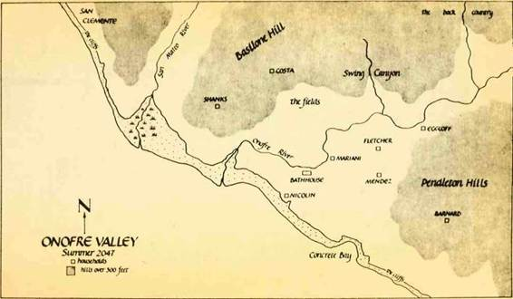
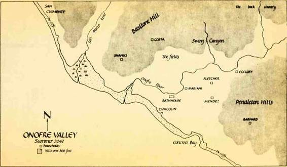

THE WILD SHORE

"It wouldn't really be graverobbing, " Nicolin was explaining. "Just dig up a coffin and take the silver off the outside of it. Never open it up at all. Bury it again nice and proper—now what could be wrong with that? Those silver coffin handles are going to waste in the ground anyway. "
The five of us considered it. Near sunset the cliffs at the mouth of our valley glow amber, and on the wide beach below tangles of driftwood cast shadows all the way to the sandstone boulders at the foot of the cliff. Each clump of wave-worn wood could have been a gravemarker, swamped and washed on its side, and I imagined digging under one to find what lay beneath it.
Gabby Mendez tossed a pebble out at a gliding seagull. "Just exactly how is that not graverobbing?" he demanded of Nicolin.
"It takes desecration of the body to make it graverobbing. " Nicolin winked at me; I was his partner in these sorts of things. "We aren't going to do any such thing. No searching for cufflinks or belt buckles, no pulling off rings or dental work, nothing of the sort!"
•"Ick, " said Kristen Mariani.
We were on the point of the cliff above the rivermouth— Steve Nicolin and Gabby, Kristen and Mando Costa, Del Simpson and me—all old friends, grown up together, out on our point as we so often were at the end of a day, arguing and talking and making wild plans... that last being the specialty of Nicolin and me. Below us in the first bend of the river were the fishing boats, pulled up onto the tidal flats. It felt good to sit on the warm sand in the cool wind with my friends, watching the sun leak into the whitecaps, knowing my work for the day was done. I felt a little drowsy. Gabby slung another pebble at the gulls, who ignored it and landed in a group near the boats, bitching over fishheads.
"Why, with that much silver we would be kings of the swap meet, " Nicolin went on. "And queens, " he said to Kristen, who nodded. "We'd be able to buy anything there twice. Or travel up the coast if we wanted. Or across the country. Just generally do what we pleased. "
And not what your father tells you to, 1 thought to myself. But I felt the pull of what he said, I admit it.
"How are you going to make sure that the coffin you take the trouble to dig up has got silver on it?" Gab asked, looking doubtful.
"You've heard the old man talk about funerals in the old time, " Nicolin scolded. "Henry, you tell him. "
"They were scared of death in an unnatural way back then, " I said, like I was an authority. "So they made these huge funeral displays to distract themselves from what was really happening. Tom says a funeral might cost upward of five thousand dollars. "
Steve nodded at me approvingly. "He says every coffin put down was crusted with silver. "
"He says men walked on the moon, too, " Gabby replied. "That don't mean I'm going to go there looking for footprints. " But I had almost convinced him; he knew that Tom Barnard, who had taught us to read and write (taught Steve and Mando and me, anyway), would describe the wealth of the old time, in detail, as quick as you might say, "Tell us—"
"So we just go up the freeway into the ruins, " Nicolin went on. "and find us a rich-looking tombstone in a cemetery, and there we have it. "
"A tombstone with diamond earrings, eh?" said Gabby.
"Tom says we shouldn't go up there, " Kristen reminded us.
Nicolin tilted his head back and laughed. "That's because he's scared of it. " He looked more serious. "Of course that's understandable, given what he's been through. But there's no one up there but the wreckrats, and they won't be out at night. "
He had no way to be sure of that, as we had never been up there day or night: but before Gabby could call him on it. Mando squeaked, "At night?"
"Sure!" Nicolin cried.
"I hear the scavengers will eat you if they can, " Kristen said.
"Is your pa going to let you leave doctoring and farming during the day?" Nicolin asked Mando. "Well, it's the same with all of us, only more so. This gang has got to do its business at night. " He lowered his voice: "That's the only time to be graverobbing in a cemetery, anyway, " laughing at the look on Mando's face.
"Graverobbing at the beach you can do any time of day, " I said, half to myself.
"I could get the shovels, " Del said.
"And I could bring a lantern, " Mando said quickly, to show he wasn't scared. And suddenly we were talking a plan. I perked up and paid more attention, a bit surprised. Nicolin and I had outlined a number of schemes before: trapping a tiger in the back country, diving for sunken treasure on the concrete reef, extracting the silver contained in old railroad tracks by melting them. But most of these proposals had certain practical difficulties to them that became apparent at some time or other in the discussion, and we let them slide. They were just talk. With this particular plan, however, all we had to do was sneak up into the ruins—something we always swore we really wanted to do—and dig. So we talked about which night the scavengers were least likely to be out and about (full moon, Nicolin assured Mando, when the ghosts were visible), who we might ask to come along, who it would have to be kept secret from, how we could chop the silver handles into tradeable discs, and so forth.
Then the ocean was lapping at the red rim of the sun, and it got a good deal colder. Gabby stood up and kneaded his butt, talking about the venison supper he was going to have that night. The rest of us got up too.
"We're really going to do this one, " Nicolin said intently. "And by God, I'm ready for it. "
As we walked up from the point I took myself off from the rest, and followed the cliff's edge. Out on the wide beach the tidal puddles streaking the sand were a dark silver, banded with red—little models of the vast ocean surging beyond them. On the other side of me was the valley, our valley, winding up into the hills that crowded the sea. The trees of the forest blanketing the hills all waved their branches in the sunset onshore wind, and their late spring greens were tinted pollen color by the drowning sun. For miles up and down the curving reach of the coast the forest tossed, fir and spruce and pine like the hair of a living creature, and as I walked I felt the wind toss my hair too. On the ravine-creased hillsides not one sign of man could be seen (though they were there), it was nothing but trees, tall and short, redwood and torrey pine and eucalyptus, dark green hills cascading into the sea, and as I walked the amber cliff's edge I was happy. I didn't have the slightest inkling of a notion that my friends and I were starting a summer that would... change us. As I write this account of those months, deep in the harshest winter I have ever known, I have the advantage of time passed, and I can see that this excursion in search of silver was the start of it—not so much because of what happened, understand, but because of what didn't happen, because of the ways in which we were deceived. Because of what it gave us a taste for. I was hungry, you see; not just for food (that was a constant), but for a life that was more than fishing, and hoeing weeds, and checking snares. And Nicolin was hungrier than I.
But I'm getting ahead of my story. As I strolled the steep sandstone border between forest and sea, I had no premonition of what was to come, nor any heed for the warnings of the old man. I was just excited by the thought of an adventure. As I turned up the south path towards the little cabin that my pa and I shared, the smells of pine and sea salt raked the insides of my nose and made me drunk with hunger, and happily I imagined chips of silver the size of a dozen dimes. It occurred to me that my friends and I were for the very first time in our lives actually going to do what we had so often boastfully planned to do—and at the thought I felt a thrilling shiver of anticipation, I leaped from root to root in the trail: we were invading the territory of the scavengers, venturing north into the ruins of Orange County.
The night we picked to do it, fog was smoking up off the ocean and gusting onshore, under a quarter moon that gave all the white mist patches a faint glow. I waited just inside the door of our cabin, ignoring Pa's snores. I had read him to sleep an hour before, and now he lay heavily on his side, calloused fingers resting on the crease in the side of his head. Pa is lame, and simple, on account of tangling with a horse when I was young. My ma always used to read him to sleep, and when she died Pa sent me up to Tom's to carry on with my learning, saying in his slow way that it would be good for both of us. Right he was, I suppose.
I warmed my hands now and then over the gray coals of the stove fire, as I had the cabin door partway open, and it was cold. Outside, the big eucalyptus down the path blew in and out of visibility. Once I thought I saw figures standing under it; then a clammy puff of fog drifted onto the house, smelling like the rivermouth flats, and when it cleared away the tree stood alone. I wished the others would come. Except for Pa's snoring there was no sound but the quiet patter of fog dew, sliding off leaves onto our roof.
W-whooo, w-whooo. Nicolin's call startled me from a doze. It was a pretty good imitation of the big canyon owls, although the owls only called out once a year or so, it seemed, so it didn't make much sense as a secret call in my opinion. It did beat a leopard's cough, however, which had been Nicolin's first choice, and which might have gotten him shot.
I slipped out the door and hurried down the path to the eucalyptus. Nicolin had Del's two shovels over his shoulders; Del and Gabby stood behind him.
"We've got to get Mando, " I said.
Del and Gabby looked at each other. "Costa?" Nicolin said.
I stared at him. "He'll be waiting for us. " Mando and I were younger than the other three—me by one year, Mando by three—and I sometimes felt obliged to stick up for him.
"His house is on the way anyway, " Nicolin told the others. We took the river path to the bridge, crossed and hiked up the hill path leading to the Costas'.
Doc Costa's weird oildrum house looked like a little black castle out of one of Tom's books—squat as a toad, and darker than anything natural in the fog. Nicolin made his call, and pretty soon Mando came out and hustled down to us.
"You still going to do it tonight?" he asked, peering around at the mist.
"Sure, " I said quickly, before the others seized on his hesitation as an excuse to leave him. "You got the lantern?"
"I forgot. " He went back inside and got it. When he returned we walked back down to the old freeway and headed north on it.
We walked fast to warm up. The freeway was two pale ribbons in the mist, heavily cracked underfoot, black weeds in every crack. Quickly we crossed the ridge marking the north end of our valley, and narrow San Mateo Valley immediately to the north of the ridge. After that, we were walking up and down the steep hills of San Clemente. We held close together, and didn't say much. On each side of us ruins sat in the forest: walls of cement blocks, roofs held up by skeletal foundations, tangles of wire looping from tree to tree—all of it dark and still. But we knew the scavengers lived up here somewhere, and we hurried along as silently as the ghosts Del and Gab had been joking about, a mile back where they'd felt more comfy. A wet tongue of fog licked over us as the freeway dropped into a broad canyon, and we couldn't see a thing but the broken surface of the road. Creaks emerged from the dark wet silence around us, as well as an occasional flurry of dripping, as if something had brushed against leaves, something following us, for instance.
Nicolin stopped to examine an offramp curving down to the right. "This is it. " he hissed. "Cemetery's at the top of this valley. "
"How do you know?" Gab said in his ordinary voice, which sounded awfully loud.
"I came up here and found it, " Nicolin said. "How do you think I knew?"
We followed him off the highway, pretty impressed that he had come up here alone. Even I hadn't heard about that one. Down in the forest there were more buildings than trees, almost, and they were big buildings. They were falling down every way possible; windows and doors knocked out like teeth, with shrubs and ferns growing in every hole; walls slumped; roofs piled on the ground like barrows. The fog followed us up this street, rustling things so they sounded like thousands of scurrying feet. Wires looped over poles that sometimes tilted right down to the road; we had to step over them, and none of us touched the wires.
A coyote's bark chopped the drippy silence and we all froze. Was that a coyote or a scavenger? But nothing followed it, and we took off again, more nervous than ever. The street made some awkward switchbacks at the head of the valley, and once we got up those, we were on the canyon-cut plateau that once made up the top of San Clemente. Up here were houses, big ones, all set in rows by the street like fish out to dry, as if there had been so many people that there wasn't room to give each family a decent garden. A lot of the houses were busted and overgrown, and some were gone entirely—just floors, with pipes sticking out of them like arms sticking up out of a grave. Scavengers had lived here, and had used the houses one by one for firewood, moving on when their nest was burned; it was a practice I had heard about, but I'd never before seen the results first hand, the destruction and waste.
Nicolin stopped at a street crossing filled with a bonfire pit. "They sure set their streets out square, " Del observed. "Up this one here, " said Nicolin.
We followed him north, along a street that paralleled the ocean on the plateau's edge. Below us the fog was like another ocean, putting us on the beach again so to speak, with occasional white waves running up over us. The houses lining the street stopped, and a fence began, metal rails connecting stone piles. Beyond the fence the rippling plateau was studded with squared stones, sticking out of tall grass: the cemetery. We all stopped and looked. In the mist it was impossible to see where it ended; it looked like an awful big cemetery. Finally we stepped over a break in the fence and walked into the thick grass, between bushes and tombstones.
They had lined up the graves as straight as their houses. Suddenly Nicolin faced the sky and yowled his coyote yowl, yip yip yoo-ee-oo-ee-oo-eeee, yodeling as crazily as any bush dog.
"Stop that, " Gabby said, disgusted. "That's all we need is dogs howling at us. "
"Or scavengers, " Mando added fearfully.
Nicolin laughed. "Boys, we're standing in a silver mine, that's all. " He crouched down to read a gravestone: too dark; he hopped over to another. "Look how big this one is. " He put his face next to it and with the help of his fingers read it. "Here we got a Mister John Appleby. 1919-1984. Nice big stone, died the right time—living in one of them big houses down the road—rich for sure, right?"
"There should be a lot written on the stone, " I said. "That's proof he was rich. "
"There is a lot, " Nicolin said. "Be-loved father, I think... some other stuff. Want to give him a try?"
For a while no one answered. Then Gab said, "Good as any other. "
"Better, " Nicolin replied. He put down one shovel and hefted the other. "Let's get this grass out of the way. " He started stabbing the shovel into the ground, making a line cut. Gabby and Del and Mando and I just stood and stared at him. He looked up and saw us watching. "Well?" he demanded quickly. "You want some of this silver?"
So I walked over and started cutting; I had wanted to before, but it made me nervous. When we had the grass pulled away so the dirt was exposed, we started digging in earnest. When we were in up to our knees we gave the shovels to Gabby and Del, panting some. I was sweating easily in the fog, and I cooled off fast. Clods of the wet clay squashed under my feet. Pretty soon Gabby said, "It's getting dark down here; better light the lantern. " Mando got out his spark rasp and set to lighting the wick.
The lantern put out a ghastly yellow glare, dazzling me and making more shadows than anything else. I walked away from it to keep my night sight, and get my circulation going. My arms were spotted with dirt, and I felt more nervous than ever. From a distance the lantern's flame was larger and fainter, and my companions were black silhouettes, the ones with the shovels waist-deep in the earth. I came across a grave that had been dug up and left open, and I jumped and hustled back down to the glow of the lantern, breathing hard.
Gabby looked up at me, his head just over the level of the dirt pile we were making. "They buried them deep, " he said in an odd voice. He tossed up more dirt.
'Maybe this one's already dug up, " Del suggested, looking into the hole at Mando, who was getting up a handful of dirt with every shovel toss.
"Sure, ' Nicolin scoffed. "Or maybe they buried him alive and he crawled out by himself. "
"My hand hurts, " Mando said. His shovel stock was a branch, and his hands weren't very tough.
"'My hand hurts', " Nicolin whined. "Well get out of there, then. "
Mando climbed out, and Steve hopped into the hole to replace him, attacking the floor of the hole until the dirt flew into the mist.
I looked for the stars, but there wasn't a one out. It felt late. I was cold, and ravenous. The fog was thickening; the area wrapped around us looked clear, but quickly the mist became more visible, until several yards away it was all we could see— blank white. We were in a bubble of white, and at the edges of the bubble were shapes: long arms, heads with winking eyes, quick sets of legs...
Thunk. One of Nicolin's two-handed shovel stabs had hit something. He stood with both hands on the stock, looking down. He jabbed tentatively, tunk tunk tunk. "Got it, " he said loudly, and began to scrape dirt up again After a bit he said. "Move the lantern down to this end. " Mando picked it up and held it over the grave. By its light I saw the faces of my companions, sweaty and streaked with dirt, the whites of their eyes large. My arms were dirty to the elbows.
But that was just the start. Nicolin started to curse, and we quickly learned from him that our hole, a good five feet long by three feet wide, had just nicked the end of the coffin- "The damn thing's buried under the headstone!" It was still solidly stuck in the clay.
We argued a while about what to do, and the final plan— Nicolin's—was to scrape dirt away from the top and sides of the coffin, and haul it out into the hole we had made. After we had scraped away to the full reach of our arms, Nicolin said, Henry, you've done the least digging so far, and you're long and skinny, so crawl down there and start pushing the dirt back to us. "
I protested, but the others agreed I was the man for the job, so pretty soon I found myself lying on top of that coffin, with dripping clay an inch over my back and butt, tearing at the dirt with my fingers and slinging it out behind me. Only continuous cursing kept my mind off what was lying underneath the wood I was on, exactly parallel to my own body. The others yelled in encouragements, like "Well, we're going home now, " or "Oh, who's that coming?" or "Did you feel the coffin shake just then?"—but I didn't think they were one bit funny. Finally I got my fingers over the far edge of the box, and I shimmied back out the hole, brushing the mud off me and muttering with disgust and fear. "Henry, I can always count on you, " Steve said as he leaped into the grave. Then it was his and Del's turn to crawl around down there, tugging and grunting; and with a final jerk the coffin burst back into our hole, while Steve and Del fell down beside it.
It was made of black wood, with a greenish film on it that gleamed like peacock feathers in the lantern light. Gabby knocked the dirt off the handles, and then cleaned the gunk off the stripping around the coffin's lid: silver, all of it.
"Look at those handles, " Del said reverently. There were six of them, three to a side, as bright and shiny as if they'd been buried the day before, instead of sixty years. I noticed the gash in the wood where Nicolin had first struck.
"Man, " said Mando. "Will you look at all that silver. "
We did look at it. I thought of us at the next swap meet, decked out like scavengers in fur coats and boots and feather hats, walking around with our pants almost falling off from the weight of all those big chips of silver. We shouted and yipped and yowled, and pounded each other on the back. Then we stood and looked at it some more, and yelled some more. Gabby rubbed a handle with his thumb; his nose wrinkled.
"Hey, " he said. "Uh... " He grabbed the shovel leaning against the side of the hole, and poked the handle. Thud, it went. Not like metal on metal. And the blow left a gash in the handle. Gabby looked at Del and Steve, and crouched down to look close. He hit the handle again. Thud thud thud. He ran his hand over it.
"This ain't silver, " he said. "It's cut. It's some kind of... some kind of plastic, I guess. "
"God damn, " said Nicolin. He jumped in the hole and grabbed the shovel; jabbed the stripping on the coffin lid, and cut it right in half.
Well, we stared at that box again, but nobody did any shouting this time.
"God damn that old liar, " Nicolin said. He threw the shovel down. "He told us that every single one of those funerals cost a fortune. He said—" He paused; we all knew what the old
man had said. "He told us there'd be silver. "
He and Gabby and Del stood in the grave. Mando took the lantern to the headstone and put it down. "Should call this headstone a kneestone, " he said, trying to lighten the mood a bit.
Nicolin heard him and scowled. "Should we go for his ring?"
"No!" Mando cried, and we all laughed at him.
"Go for his ring and belt buckle and dental work?" Nicolin repeated harshly, slipping a glance at Gabby. Mando shook his head furiously, looking like he was about to cry. Del and 1 laughed; Gabby climbed out of the hole, looking disgusted. Nicolin tilted his head back and laughed, short and sharp. He scrambled out of the grave. "Let's bury this guy and then go bury the old man. "
We shoveled dirt back in. The first clods hit the coffin with an awful hollow sound, bonk bonk bonk. It didn't take long to fill the hole. Mando and I put the grass back in place as best we could. When we were done it looked terrible. "Appears he's been bucking around down there, don't it, " Gabby said.
We killed the lantern flame and took off. Fog flowed through the empty streets like water up a steambed, with us under the surface, down among drowned ruins and black seaweed. Back on the freeway it felt less submerged, but the fog swept hard across the road, and it was colder. We hiked south as fast as we could walk, none of us saying a word. When we warmed up we slowed down a little, and Nicolin began to talk. "You know, since they had those plastic handles colored silver, it must mean that some time before that people were buried with real silver handles—richer people, or people buried before 1984, or whatever. " We all understood this as a roundabout way of proposing another dig, and so no one agreed, although it appeared to make sense. Steve took offense at our silence and gained ground on us till he was just a mark in the mist. We were almost out of San Clemente.
"Some sort of God damned plastic, " Gabby was saying to Del. He started to laugh, harder and harder, until he was leaning an elbow on Del's shoulder. "Whoo, hoo hoo hoo... we just spent all night digging up five pounds of plastic. Plastic!"
All of a sudden a noise pierced the air—a howl, a singing screech that started low and got ever higher and louder. No living creature was behind that sound; it was unlike anything I had ever heard. It reached a peak of height and loudness, and wavered there between two tones, rising and falling, oooooo- eeeeee-oooooo-eeeeee-oooooo, on and on and on, like the scream of the ghosts of every dead person ever buried in Orange County, or the final shrieks of all those killed by the bombs.
We all unstuck ourselves from our tracks and took off running. The noise continued, and appeared to follow us.
'"What is it?" Mando cried.
"Scavengers!" Nicolin hissed. And the sound cranked up and down, closer to us than before. "Run faster!" Nicolin called over it. The breaks in the road surface gave us no trouble at all; we flew over them. Rocks began clattering off the concrete behind us, and over the embankment that the freeway ran on. "Keep the shovels, " I heard Del exclaim. I picked up a good- sized rock by the road, relieved in a way that it was only scavengers after us. Nothing but fog behind me, fog and the howl, but rocks came out of the whiteness at a good rate. I threw my rock at a dark shape and ran after the others, chased by some howls that were at least animal, and could have been human. But over them was the blast, rising and falling and rising. "Henry!" Steve shouted. The others were down the embankment with him. I jumped down and traversed through weeds, behind the rest. "Get rocks, " Nicolin ordered. We picked up rocks, then turned and threw them onto the freeway behind us all at once. We got screams for a reply. "We got one!" Nicolin said. But there was no way of knowing. We rolled onto the freeway and ran again. The screech lost ground on us, and eventually we were into San Mateo Valley, and on the way to Basilone Ridge, above our own valley. Behind us the noise continued, fainter with distance and the muffling fog.
"That must be a siren, " Nicolin said. "What they call a siren. Noise machine. We'll have to ask Rafael. " We threw the rocks we had left in the general direction of the sound, and jogged over the ridge into Onofre.
"Those dirty scavengers, " Nicolin said, when we were onto the river path, and had caught our breath. "I wonder how they found us. "
"Maybe they were out wandering, and stumbled across us, " I suggested.
"Doesn't seem likely. "
"No. " But I couldn't think of a likelier explanation, and 1 didn't hear Steve offering one. It was no less likely than the existence of that ungodly noise, anyway.
"I'm going home. " Mando said, a touch of relief in his voice. He sounded odd somehow—scared maybe—and I felt a chill run down me.
"Okay, you do that. We'll get those wreckrats another time. "
Five minutes later we were at the bridge. We crossed, and Gabby and Del went upriver. Steve and I stood in the fork of the path. He started to discuss the night, cursing the scavengers, the old man, and John Appleby alike, and it was clear his blood was high. He was ready to talk till dawn, but I was tired. I didn't have his stamina, and I was still shaken by that noise. Siren or no, it had sounded deadly inhuman. So I said goodnight to Steve and slipped in the door of my cabin. Pa's snoring broke rhythm, resumed. I tore a piece of bread from the next day's loaf and stuffed it down, tasting dirt. I dipped my hands in the wash bucket and wiped them off, but they still felt grimy, and they stank of the grave. I gave up and lay on my bed, feeling gritty, and was asleep before I even warmed up.
I was dreaming of the moment when we had started to fill in the open grave. Dirt clods were hitting the coffin with that terrible sound, bonk bonk bonk; but in the dream the sound was a knocking from inside the coffin, getting louder and more desperate the faster we filled in the hole.
Pa woke me in the middle of this nightmare: "They found a dead man washed up on the beach this morning. "
"Huh?" I cried, and jumped out of bed all confused. Pa backed off, startled. I leaned over the wash bucket and splashed my face. "What's this you say?"
"I say, they found one of those Chinamen. You're all covered with dirt. What's with you? You out again last night?"
I nodded. "We're building a hideout. "
Pa shook his head, baffled and disapproving.
"I'm hungry, " I added, going for the loaf of bread. I took a cup from the shelf and dipped it in the water bucket.
"We don't have anything but bread left. "
"I know. " I pulled some chunks from the loaf. Kathryn's bread was good even when a bit stale. I went to the door and opened it, and the gloom of our windowless cabin was split by a wedge of muted sunlight. I stuck my head out into the air: dull sun, trees along the river sopping wet. Inside the light fell on Pa's sewing table, the old machine burnished by years of handling. Beside it was the stove, and over that, next to the stovepipe that punctured the roof, the utensil shelf. That, along with table, chairs, wardrobe and beds, made up the whole of our belongings—the simple possessions of a simpleton in a simple trade. Why, folks didn't even really need to have Pa sew their clothes
"You better get down to the boats, " Pa said sternly. "It's late, they'll be putting out. "
"Umph. " Pa was right; I was late. Still swallowing bread, I put on shirt and shoes. "Good luck!" Pa called as I ran out the door.
Crossing the freeway I was stopped by Mando, coming the other way. "Did you hear about the Chinaman washed up?" he called.
"Yeah! Did you see him?"
"Yes. Pa went down to look at him, and I tagged along. "
"Was he shot?"
"Oh yeah. Four bullet holes, right in the chest. "
"Man. " A lot of them washed up like that. "I wonder what they're fighting about so hard out there. "
Mando shrugged. In the potato patch across the road Rebel Simpson was chasing a dog with a spud in its mouth, yelling at it. her face red. "Pa says there's a coast guard offshore, keeping people out. "
"I know, " I said. "I just wonder if that's it. " Big ships ghosted up and down the long coast, usually out near the horizon, sometimes nearer; and bodies washed ashore from time to time, riddled with bullets. But that was the extent of what we could say for sure about the world offshore, in my opinion, When I thought about it my curiosity sometimes became so intense that it shaded into something like fury. Mando, on the other hand, was confident that his father (who was only echoing the old man) had the explanation. He accompanied me out to the cliff. Out to sea was a bar of white cloud, lying on the horizon: the fog bank, which would roll in later when the onshore wind got going. Down on the river flat they were loading nets onto the boats. "I've got to get on board, '" I said to Mando. "See you later. "
By the time I had descended the cliff they were launching the boats. I joined Steve by the smallest of them, which was still on the sand. John Nicolin, Steve's father, walked by and glared at me. "You two take the rods today. You won't be good for anything else. " I kept my face wooden. He walked on to growl a command at the boat shoving off.
"He knows we were out?"
"Yeah. " Steve's lip curled. "I fell over a drying rack when I snuck in. "
"Did you get in trouble?"
He turned his head to show me a bruise in front of his ear. "What do you think?" He was in no mood to talk, and I went to help the men hauling the next boat over the flat. The cold water sluicing over my feet woke me up good for the first time that day. Out to sea the quiet krrr, krrrrrr of breaking waves indicated a small swell. The little boat's turn came and Steve and I hopped in as it was shoved into the channel. We rowed lazily, relying on the current, and we got over the breakers at the rivermouth without any trouble.
Once all the boats were out around the buoy marking the main reef, it was business as usual. The three big boats started their circling, spreading the purse net; Steve and I rowed south, the other rod boats rowed north. At the south end of the valley there is a small inlet, nearly filled by a reef made of concrete— Concrete Bay, we call it. Between the concrete reef and the larger reef offshore is a channel, one used by faster fish when the nets are dropped; rod fishing usually gets results when the nets are being worked. Steve and I dropped our anchor onto the main reef, and let the swell carry us in over the channel, almost to the curved white segments of the concrete reef. Then it was out with the rods. I knotted the shiny metal bar that was my lure onto the line. "Casket handle, " I said to Steve, holding it up before I threw it over. He didn't laugh. I let it sink to the bottom, then started the slow reel up.
We fished. Lure to the bottom, reel it back up; throw it in again. Occasionally the rods would arc down, and a few minutes of struggling ended with the gaff work. Then it was back to it. To the north the netters were pulling up nets silver with fish flopping after their lost freedom; the boats tilted in under the weight, until sometimes it seemed their keels would show and they would turn turtle. Inland the hills seemed to rise and fall, rise and fall. Under the cloud-filmed sun the forest was a rich green, the cliff and the bare hilltops dull and gray.
Now five years before, when I was twelve and Pa had first hired me out to John Nicolin, fishing had been a big deal. I had been excited by everything about it—the fishing itself, the moods of the ocean, the teamwork of the men, the entrancing view of the land from the sea. But a lot of days on the water had passed since then, a lot of fish hauled over the gunwale: big fish and small, no fish or so many fish that we exhausted our arms and wore our hands ragged; over steep slow swells, or windblown chop, or on water flat as a plate; and under skies hot and clear, or in rain that made the hills a gray mirage, or when it was stormy, with clouds scudding overhead like horses... mostly days like this day, however, moderate swell, sun fighting high clouds, medium number of fish. There had been a thousand days like this one, it seemed, and the thrill was long gone. It was just work to me now.
In between catches I dozed, lulled by the swell. Slouching down and resting my head on the gunwale worked fine for a while, as did curling over on the seatboard, though my face might get slapped by a twitching tailfin. The rest of the time I just hunched over my rod, waking up when it jerked into my stomach. Then I reeled the fish in,. gaffed it, pulled it over the side, smacked its head, got the lure out and tossed it over again, and went back to sleep. I tried lying flat on my back on the seat (all of three feet long), legs crisscrossed and feet precariously placed on the gunwale, to sleep for ten minutes more.
"Henry!"
"Yeah!" I said, sitting up and checking my rod automatically.
"We got quite a few fish here. "
I glanced at the bonita and rock bass in the boat. "About a dozen. "
"Good fishing. Maybe I'll be able to get away this afternoon. " Steve said wistfully.
1 doubted it, but I didn't say anything. The sun was obscured, and the water was gray; it was getting chill. The fog bank had started its roll in. "Looks like we'll spend it on shore, " I said.
"Yeah. We've got to go up and see Barnard; I want to beat the shit out of that old liar. "
"Sure. "
Then we both hooked big ones, and we had a time of it keeping our lines clear. We were still working them when the blare of Rafael's bugle floated over the water from the netters. The nets were up, the fog was rolling in pretty quick; fishing was done for the day. We whooped and got our fish aboard without delay, slapped our oars into the oarlocks and beat it back to Rafael's boat. They parceled some fish out to us, as some of the boats were about foundering under their load, and we rowed into the rivermouth.
With the help of the Nicolin family and the others on the beach, we pulled the boat up onto the sand and took our fish over to the cleaning tables. Gulls soused us repeatedly, screeching and flapping. When the boat was empty and pulled up to the cliff, Steve approached his father, who was looking after the nets, shaking a finger at Rafael and lecturing him about some twists in the line.
"Can I go now, Pa?" Steve asked. "Hanker and L need to do our lessons with Tom. " Which was true.
"Nope, " old Nicolin said, bent over and still inspecting the net. "You're going to help us fix this net. And then you're going to help your ma and sisters clean fish. "
At first John had made Steve go to learn to read from the old man, because he figured it was a sign of family prosperity and distinction. Then when Steve got to liking it (which took a long time), his father took to keeping him from it; it became another weapon in the battle between them. John straightened, looked at Steve; a bit shorter than his son, but a lot thicker; both of them with the same squarish jaw, brown shock of hair,
light blue eyes, straight strong nose________ They glared at each
other, John daring Steve to talk back to him with all the men wandering around. For a second I thought it was going to happen, that Steve was going to defy him and begin who knows what kind of bloody dispute. But Steve turned away and stalked over to the cleaning tables. After a short wait to allow his anger to lose its first bloom, I followed him.
"I'll go on up and tell the old man you're coming later. "
"All right. " Steve said, not looking at me. "I'll be there when I can. "
Old Nicolin gave me three rock bass and I hauled them up the cliff in a net bag I would have to return. The cluster of homes in the second bend of the river was nearly deserted. A gang of kids splashed clothes in the water, and farther upstream several women stood around the ovens at the Marianis'. Up away from the sea it seemed quiet; a dog's bark sounded clearly from across the placid stream.
I took the fish to Pa, who jumped up from his sewing machine hungrily. "Oh good, good. I'll get to work on these, one for tonight, dry the others. " I told him I was going to the old man's and he nodded, pulling rapidly at his long moustache. "Eat this right after dark, okay?"
"Okay, " I said, and was off.
The old man's home is on the steep ridge marking the southern end of our valley, on a flat spot just bigger than his house, about halfway to the peak of the tallest hill around. There isn't a better view from any home in Onofre. When I got up there the house, a four-roomed wooden box with a fine front window, was empty. I made my way through the junk surrounding the house carefully. Among the honey flats, the telephone wire cutters, the sundials, the rubber tires, the rain barrels with their canvas collecting funnels, the generator parts, the broken engines, the grandfather clocks and gas stoves and crates full of who knows what, there were big pieces of broken glass, and several varmint traps that he was constantly moving about, so that it was smart to watch out. Over at Rafael's house, machines like those scattered across Tom's little yard would be fixed and in working order, or stripped for their parts, but here they were just conversation pieces. Why have an automobile engine propped on sawhorses, and how had he gotten it up the ridge, anyway? That was just what Tom wanted you to wonder.
I kept going up the eroded path that ran the edge of the ridge. To the south forested spines rose from the beach cliff, one after another of them all the way down to Pendleton. Near the peak of the spine I was climbing the path turned and dropped into the crease south of it, a narrow canyon too small to hold a permanent stream, but there was a spring. The eucalyptus trees kept the ground clear of underbrush, and on a gentle slope of the crease the old man kept his beehives, a score of small white wooden domes. I spotted him standing among them, draped in his beekeeping clothes and hat so that he looked like a child in adult's clothing. But he moved pretty spryly for a man over a hundred years old, 1 mean. He was ambling from dome to dome, pulling out trays and fingering them with a gloved hand, kicking another dome, wagging a finger at a third, and talking all the while, I could tell, despite the hat that hid most of his face. Tom talked to everything: people, himself, dogs, trees, the sky, fish on his plate, rocks he stubbed a toe on... naturally he talked to his bees. He shoved a flat back into a hive and looked around, suddenly wary; then he caught sight of me and waved. As I approached he went back to checking hives, and I observed his walk. His knees swung out to the sides when he stepped, as if his kneecaps were on the outsides of his legs. And his arms swung everywhere, for balance I guess, stiff and wild under his long sleeves.
"Get away from the hives, boy, you'll get stung. "
"They aren't stinging you/*
He took off his hat and waved a bee back toward its hive. "They don't have a lot of me to pick at, now do they. Besides they won't sting me; they know who's taking care of them. " We got out from among the hives. The long white hair over his ears streamed back in the wind, mixing in my sight with the clouds; his beard was tucked into his shirt, "so I don't eat any of the little sweeties. " The fog was rising, forming quick cloud streams. Tom rubbed his freckled pate. "Let's get out of the wind. Henry my boy. It's so cold the bees are acting like idiots. You should hear what nonsense they talk. Just like they've been smoked. Perhaps you'd have some tea with me. "
"Sure. " Tom's tea was so strong it was almost like having a meal.
"Have you got your lesson ready?"
"You bet. Say, did you hear about the dead man washed up?"
"I went down to look at him. Washed up just north of the rivermouth. A Japanese, I'd venture. We buried him at the back of the graveyard with the rest of them. "
"What do you think happened to him?"
"Well... " We turned onto the path to his house. "Someone shot him!" He cackled at my expression. "1 guess he was trying to visit the United States of America. But the United States of America is out of bounds. " He navigated his yard without paying the least bit of attention to it, and I followed him closely. We went into the house. "Obviously someone has declared us out of bounds, we are beyond the pale, boy, only in this case the pale is rather dark, those ships steaming back and forth out there are so black you can see them even on a moonless night, rather stupid of them if they wanted them truly invisible. I haven't seen a foreigner—a live foreigner, that is—those dead ones make mighty poor informants, hee hee—since the day. That's too long for coincidence, not that there aren't contributing indications. But that's the main fact; where are they?— since they are out there. " He filled the teapot. "It's my hypothesis that declaring us off limits was the only way to avoid fighting over us, and destroying... but I've outlined this particular guess to you before, eh?"
I nodded.
"And yet I don't even know who we're talking about, when you get right down to it. "
"The Chinese, right?"
"Or the Japanese. "
"So you think they really are out there on Catalina just to keep folks away?"
"Well I know someone's on Catalina, someone not like us. That's one thing I know. I've seen the lights from up here at night, blinking all over the island. You've seen them. "
"I sure have, " I said. "It's beautiful. "
"Yeah, that Avalon must be a bustling little port these days. No doubt something bigger on the backside, some Alexandrian causeway harbor, you know. It's a blessing to know something for sure, Henry. Surprisingly few things you can say that about. Knowledge is like quicksilver. " He walked over to the fireplace. "But someone is on Catalina. "
"We should go over and see who. "
He shook his head, looking out his big window at the fast onshore streamers. "We wouldn't come back. "
Subdued, he threw some twigs on the coals of the banked fire, and we sat before the window in two of his armchairs, waiting for the water to heat. The sea was a patchcloth, dark grays and light greys, with silver buttons scattered in a crooked line between us and the sun. It looked like it was going to rain rather than fog up; old Nicolin would be mighty annoyed, because you can fish in the rain. Tom pulled at his face, making a new pattern in the ten thousand wrinkles lining it. "Whatever happened to summertime, " he sang, "yes when the living was eee-sy. " I threw some more twigs on the fire, not bothering to respond to the little tune I had heard so often. Tom had told a lot of stories about the old time, and he was insistent that in those days our coastline had been a treeless, waterless desert. But looking out the window at the forest and the billowing clouds, feeling the fire warm the chill air of the room, remembering our adventure of the night before, I wondered if I could believe him. Half of his stories I could not confirm in his many books—and besides, couldn't he have taught me to read wrong, so that what I read would back up what he said?
It would be pretty difficult to make up a consistent system. I decided as he threw one of his packets of tea—made of plants he picked in the back country—into the pot. And I remembered once at a swap meet, when he came running up to Steve and Kathryn and me, drunk and excited, blabbing, "Look what I bought, look what I got!"—pulling us under a torch to show us a tatty old half an encyclopedia, opened to a picture of a black sky over white ground, on which stood two completely white figures and an American flag. "That's the moon, see? I told you we went there, and you wouldn't believe me. " "I still don't believe you, " Steve said, and nearly busted laughing at the fit the old man threw. "I bought this picture for four jars of honey to prove it to you skeptics, and you still won't believe me?" "No!" Kathryn and I were in hysterics at the two of them—we were pretty drunk too. But he kept the picture (though he threw away the encyclopedia), and later I saw the blue ball of the Earth in the black sky. as small as the moon is in our sky. I must have stared at that picture for an hour. So one of the least likely of his claims was apparently true; and I was inclined to believe the rest of them, usually.
"All right, " Tom said, handing me my cup full of the pungent tea. "Let's hear it. "
I cleared my mind to imagine the page of the book Tom had assigned me to learn. The regular lines of the poetry made them easy to memorize, and I spoke them out as my mind's eye read them:
"'Is this the region, this the soil, the clime, ' Said then the lost Archangel, 'this the seat That we must change for Heaven?
—this mournful gloom For that celestial light?'"
I went on easily, having a good time playing the part of defiant Satan. Some of the lines were especially good for thundering out:
"'Farewell, happy fields, Where joy forever dwells! Hail, horrors! Hail, Infernal world! and thou, profoundest Hell, Receive thy new possessor—one who brings A mind not to be changed by place or time. The mind is its own place, and in itself Can make a Heaven of Hell, a Hell of Heaven. What matter where, if I be still the same, And what I should be, all but less than he Whom thunder hath made greater? Here at least We shall be free—
"All right, that's enough of that one, " Tom said, looking satisfied as he stared out to sea. "Best lines he ever wrote, and half of them stolen from Virgil. What about the other piece?" "I do that one even better, " I said confidently. "Here you
go:
"Methinks I am a prophet new inspired,
And thus expiring do foretell of him:
His rash fierce blaze of riot cannot last,
For violent fires soon burn out themselves.
Small showers last long, but sudden storms are short;
He tires betimes that spurs too fast betimes;
With eager feeding, food doth choke the feeder—"
"That was us all right, " Tom interrupted. "He's writing about America, there. We tried to eat the world and choked on it. I'm sorry, go on. "
I struggled to remember my place, and started again:
"This royal throne of kings, this sceptered isle, This earth of majesty, this seat of Mars,
This other Eden, demi-paradise,
This fortress built by Nature for herself
Against infection and the hand of war,
This happy breed of men, this little world,
This precious stone set in a silver sea
Which serves it in the office of a wall,
Or as a moat defensive to a house,
Against the envy of less happier lands,
This blessed plot, this earth, this realm, this England—"
"Enough!" Tom cried, chuckling and shaking his head. "Or too much. I don't know what I think. But I sure give you good stuff to memorize. "
"Yeah, " I said. "You can see why Shakespeare thought England was the best state. "
"Yes... he was a great American. Maybe the greatest. " "But what does moat mean?"
"Moat? Why, it means a channel of water surrounding a place to make it hard to get to. Couldn't you figure it out by context?"
"If I could've, would I have asked you?" He cackled. "Why, I heard that one out at one of the little back country swap meets, just last year. Some farmer. 'We're going to put a moat around the granary, ' he said Made me a bit surprised. But you hear odd words like that all the time. I heard someone at the swap meet say they were going to cozen up to someone, and someone else told me my sales pitch was a filibuster. Insatiate, simular it's amazing, the infusion of words into the spoken language. Bad news for the stomach is good news for the tongue, know what I mean?" "No. "
"Well, I'm surprised at you. " He stood up, stiff and slow, and refilled the teapot. After he got it set on the rack over the fire he went to one of his bookshelves. The inside of his house was a bit like the yard—junk everywhere, only smaller pieces of it: more clocks, a few of which actually worked, cracked china plates, a collection of lanterns and lamps, a machine for playing music (once in a while he'd put a record on it and turn it with one bony finger, commanding us to put our ears next to it, to hear scratchy songs whispering up and down, while he said "That's the Eroica! Listen to that!" till we told him to shut up and let us listen); but most of two walls were taken up by bookshelves, overflowing with stacks of mangy books. A lot of them he wouldn't let me read. But now he brought one over and tossed it in my lap. "Time for some sight reading. Start where I have the marker, there. "
I opened the slim, mildewed book and began to read—an act that still gave me great trouble, great pleasure. '"Justice is in itself powerless: what rules by nature is force. To draw this over to the side of justice, so that by means of force justice rules—that is the problem of statecraft, and it is certainly a hard one; how hard you will realize if you consider what boundless egoism reposes in almost every human breast; and that it is many millions of individuals so constituted who have to be kept within the bounds of peace, order and legality. This being so, it is a wonder the world is on the whole as peaceful and law-abiding as we see it to be'"—this caused the old man to laugh for a while—""which situation, however, is brought about only by the machinery of the state. For the only thing that can produce an immediate effect is physical force, since this is the only thing which men as they generally are understand and respect—'"
"Hey!"
It was Nicolin. busting into the house like Satan into God's bedroom. "I'm going to kill you right here and now!" he cried, advancing on the old man.
Tom jumped up with a whoop: "Let's see you try!" he shouted. "You don't stand a chance!"—and the two of them grappled a bit in the middle of the room. Steve holding the old man by the shoulders at just enough distance so that Tom's fierce blows missed him.
"Just what do you mean filling our heads with lies, you old son of a bitch?" Nicolin demanded, shaking Tom back and forth with genuine anger.
"And what do you mean busting into my house like that. Besides"—losing his pleasure in their usual sport—"when did I ever lie to you?"
Steve snorted. "When didn't you? Telling us they used to bury their dead in silver-lined caskets. Well now we know that one's a lie, because we went up to San Clemente last night and dug one up, and the only thing it had on it was plastic. "
"What's this?" Tom looked at me. "You did what?"
So I told him about the gang's expedition into San Clemente. When I got to the part about the coffin handles he began to laugh; he sat down in his chair and laughed, heee, heeee, hee hee heeee, all through the rest of it, including the part about the scavengers' siren attack.
Nicolin stood over him, glowering. "So now we know you're lying, see?"
"Heeeeeee, hee hee hee hee hee hee. " A cough or two. "No lies at all, boys. Only the truth from Tom Barnard. Listen here—why do you think that plastic on that coffin was silver- colored?" Steve gave me a significant look. "Because it usually was silver, of course. You just dug up some poor guy who died broke. His family bought him a cheap coffin. Now, what were you doing digging up graves for, anyway?"
"We wanted the silver, " Steve said.
"Bad luck. " He got up to get another cup, poured it full. "I tell you, most of them were buried wrapped in the stuff. Sit down here, Stephen, and have some tea. " Steve pulled up a little wooden chair, sat down and commenced sucking on his tea. Tom curled in his chair and wrapped his knobby hands around his cup. "The really rich ones were buried in gold, " he said slowly, looking down at the steam rising from his cup. "One of them had a gold mask, carved to look just like him. put over his dead face. In his burial chamber were gold statues of his wife, and dogs, and kids—he had on gold shoes, too, and little mosaic pictures of the important events of his life, made of precious stones, surrounding him on each wall of the chamber.... "
"Ah, come on, " Nicolin protested.
"I'm serious! That's what it was like. You've been up there, now, and seen the ruins—are you going to tell me they didn't throw silver in the ground with their dead?"
"But why?" I asked. "Why that gold mask and all?"
"Because they were Americans. " He sipped his tea. "That was the least of it. let me tell you. " He stared out the window for a while, a faraway look in his brown eyes. "Rain coming. " After another minute's silent sipping: "What do you want silver so bad for, anyway?"
I let Nicolin answer that one, because it was his idea.
"To trade for things, " Steve said. "To get what we want at the swap meets. To be able to go somewhere, down the coast maybe, and have something to trade for food. " He glanced at the old man, who was watching him closely. "To be able to travel like you used to. "
Tom ignored that. "You can get everything you want by trading what you make. Fish, in your case. "
"But you can't go anywhere! You can't travel with fish on your back. "
"You can't travel anyway. They blasted every important bridge in the country, from the looks of it. And if you did manage to get somewhere, the locals would take your silver and kill you, like as not. Or if they were just, you'd still run out of silver eventually, and you'd have to go to work where you were. Digging shit ditches or something. "
The fire crackled as we sat there and watched it. Nicolin let out a long sigh, looking stubborn. The old man sipped his tea and went on. "We travel to the swap meet in three days, if the weather allows. That's farther than we used to travel, let me tell you. And we're meeting more new people than ever. "
"Including scavengers, " I said.
"You don't want to get in any feud with those young scavengers, " Tom said.
"We already are, " Steve replied.
Now it was Tom's turn to let out a sigh. "There's been too much of that already. So few people alive these days, there's no reason for it. "
"They started it. "
Big drops of rain hit the window. I watched them run down the glass, and wished my home had a window. Even with the door closed and dark clouds filling the sky, all the books and crockery and lanterns and even the walls gleamed silvery grey, as if they all contained a light of their own.
"I don't want you fighting at the swap meet, " Tom said.
Steve shook his head. "We won't if we don't have to. "
Tom frowned and changed the subject. "You got your lesson memorized?"
Steve shook his head. "I've had to work too much------------ I'm
sorry. "
After a bit I said, "You know what it looks like to me?"
"What what looks like, " Tom asked.
"The coastline here. It looks like one time there was nothing but hills and valleys, all the way out to the horizon. Then one day some giant drew a straight line down it all, and everything west of the line fell down and the ocean came rushing in. Where the line crossed a hill there's a cliff, and where it crossed a valley there's a marsh and a beach. But always a straight line, see? The hills don't stick out into the ocean, and water doesn't come and fill in the valleys. "
"That's a faultline, " Tom said dreamily, eyes closed as if he were consulting books in his head. "The earth's surface is made up of big plates that are slowly sliding around. Truth! Very slowly—in your lifetime it might move an inch—in mine two, hee hee—and we're next to a fault where the plates meet. The Pacific plate is sliding north, and the land here south. That's why you get the straight line there. And earthquakes— you've felt them—those are the two plates slipping, grinding against each other. One time... one time in the old time, there was an earthquake that shattered every city on this coast. Buildings fell like they did on the day. Fires burned and there was no water to put them out. Freeways like that one down there pointed at the sky, and no one could get in to help, at first. For a lot of people it was the end. But when the fires were burned out... they came from everywhere. They brought in giant machines and material, and they used the rubble that was all that was left of the cities. A month later every one of those cities was built back up again, just as they had been before, so exactly that you couldn't even tell there had been an earthquake. "
"Ah come on, " said Steve.
The old man shrugged. "That's what it was like. "
We sat and looked through the slant-lines of water at the valley below. Black brooms of rain swept the whitecapped sea. Despite the years of work done in the valley, despite the square fields by the river, and the little bridge over it. despite the rooftops here and there, wood or tile or telephone wire—despite all of that, it was the freeway that was the main sign that humans lived in the valley... the freeway, cracked and dead and half silted over and worthless. The huge strips of concrete changed from whitish to wet gray as we watched. Many was the time when we had sat in Tom's house drinking tea and looking at it, Steve and me and Mando and Kathryn and Kristen, during our lessons or sitting out one shower or another, and many was the time that the old man had told us tales of America, pointing down at the freeway and describing the cars, until I could almost see them flashing back and forth, big metal machines of every color and shape just flying along, weaving in and out amongst each other and missing dreadful crashes by an inch as they hurried to do business in San Diego or Los Angeles, red and white headlights glaring off the wet concrete and winking out over the hill, plumes of spray spiraling back and enveloping the cars following so that no one could see properly, and Death sat in every passenger seat, waiting for mistakes—so Tom would tell it, until it would actually seem strange to me to look down and see the road so empty.
But today Tom just sat there, letting out long breaths, looking over at Steve now and then and shaking his head. Sipping his tea in silence. It made me feel low; I wished he would tell another story. I would have to walk home in the rain, and Pa would have made the fire too small and our cabin would be chill, and long after our meal of bread and fish was done, I'd have to hunch over the coals to get warm, in the drafty dark.... Below us the freeway lay like a road of giants, gray in the wet green of the forest, and I wondered if cars would drive over it ever again.
Swap meets brought out most of the people in Onofre, to get the caravan ready to go. A score of us stood on the freeway at the takeoff point on Basilone Ridge, some piling fish onto the boat trailers, some still running down to the valley and back again with forgotten stuff, others yelling at the dogs, who were for once useful, as they pulled the boat trailers. It was a real test getting them all into the halters. Around the trailers folks bickered over space. The trailers, light metal racks on a pair of wheels, were good wains, but there was a shortage of room on them. So there was old Tom threatening anyone who tried to change the wasteful stowing of his honey jars, and Kathryn defending her loaves of bread with the same threats and curses, and Steve commandeering whole trailers for the fish. Mostly we took fish to the swap meet—nine or ten trailers of them, fresh and dried—and my task was to help Rafael and Steve and Doc and Gabby to load the racks. Fish were slapping and dogs were yapping, and Steve was giving orders right and left to everyone but Kathryn, who would have kicked him, and overhead a flock of gulls screeched at us as they realized they weren't going to get a meal. It drove the dogs wild. It all reached a final pitch of excited yelling, and we were off.
On the coast the sky was the color of sour milk, but as we turned off the freeway and moved inland up San Mateo Valley, the one just north of ours, the sun began to break through here and there, and splashes of sunlight made the green hills blaze. Our caravan stretched out as the road got thinner—it was an ancient asphalt thing, starred by potholes that we had filled with stones to make our travel easier.
Steve and Kathryn walked at the end of the line of trailers, arms around each other. Sitting on the trailer end and letting one foot drag over asphalt, I watched them. I had known Kathryn Mariani for most of my life, and for most of my life I had been scared of her. The Marianis lived next to Pa and me, so I saw her all the time. She was the oldest of five girls, and when I was younger it seemed like she was always bossing us around, or giving someone a quick slap for trying to snatch bread or sneak through the cornfields. And she was big, too— after felling me with a kick of her heavy boot, as she had done more than once, her freckled ugly glare had inspected me from what seemed a tremendous height. I thought then that she was the meanest girl alive. It was only in the previous couple of years, when I grew as tall as her, that I got to the vantage point where I could see she was pretty. A snub nose doesn't look so good from below (looks like a pig snout, to tell the truth), nor a big wide mouth—but from level on she looked all right. And the year before she and Steve had become lovers, so that the other girls snickered and wondered how long it would be before they had to get married; we had become better friends as a result, and I got to know her as more than the scarecrow with a rolling pin that she had been to me. Now we kidded each other about the old times:
"Guess I'm going to lunch off that bread on the first trailer; I'm sure no one will mind. "
"You do and I'll kick your butt back to Onofre like I used to, Henry dear. " It made Nicolin laugh. He was a lot happier on these trips, with his family left behind, his father driving the men every day to get the catch in. When the dogs yelped he jogged up and tussled with them till they were grinning and simpering and slobbering over him again, ready to haul all day for the fun of it, because of the way Steve was laughing. A lor of the dogs belonged to the Nicolins, and spent most of their lives rat-catching on the cliffs. Steve had them well trained; they went quiet for him so he could sneak in and out at night without them barking hello. Pa and I didn't own any dogs— usually we were lucky just to be able to feed ourselves—but the Nicolins' dogs liked me well enough. "Good perro, " I said to them as Steve went back to Kathryn.
We made the swap meet about midday. The site was a grassy-floored meadow, filled with well-spaced eucalyptus and iron wood trees. When we got there the sun was out, more than half the attending villages were already there, and in the dappled light under the trees were colored canopies and flags, trailers and car bodies and long tables, scores of people in their finest clothes, and plumes of woodsmoke, breaking through the trees from a number of campfires. The dogs went wild.
We held the dogs by the halters and wound our way through the crowd to our campsite. After we said hello to the cowmen from Talega Canyon who camped next to us, we moved all the cow dung scattered around our spot into the firepit, and unloaded the trailers, or set them around like tables. I helped Rafael put up awnings over the fish trailers. The old man, staring raptly at the white canopy over the cowmen, pointed to it and said to Steve and me, "You know in the old time people used to string those things from their backs, and jump out of airplanes thousands of feet up. They floated all the way to the ground under them. "
"And fish played baseball. " Steve said. "Celebrating the meet a bit early, eh Tom?" Tom protested, and we laughed. The dogs were a nuisance and we took them out to the back of our site and tied them to trees, calming them with fishheads. By the time we got back to the front of our camp the trading had already begun. We were the only seaside town at this meet, almost, so we were popular. "Onofre's here, " I heard someone calling. "Look at this abalone, " someone else said, "I'm going to eat mine right now!" Rafael sang out his call: "Pescados. Pescados. " Even the scavengers from Laguna came over to trade with us; they couldn't do their own fishing even with the ocean slapping them in the face. "I don't want your dimes, lady, " Doc insisted. "I want boots, boots, and I know you've got them. " "Take my dimes and buy the boots from someone else; I'm out today. Blue Book says one dime, one fish. " Doc grumbled and made the sale. After moving the campfire wood off a trailer. I was done with my work for the day. Sometimes I had clothes to trade: I got them all tattered and torn from the scavengers, and then sold them whole again after Pa had sewn them up. But this time he hadn't patched a thing, because we hadn't had anything to trade for old clothes last month. So the day was mine, though I would keep an eye out for wrecked coats—and see them, too, but on people's backs. I walked to the front of our camp and sat down in the sun, on the edge of the main promenade.
The promenade was busy. One woman in a long purple dress balanced a crate of chickens on her head as she walked by; she was trailed by two men in matching yellow and red striped pants, and blue long-sleeved shirts. Another woman in a group of colorfully dressed friends wore a rainbow-stained pair of pants so stiff they had a crease fore and aft.
It wasn't just the clothes that distinguished the scavengers. They all talked loudly, at the top of their voices, nearly all the time. Perhaps they did it to overcome the silence of the ruins, I thought as I listened to them. Tom often said that living in the ruins made the scavengers mad. every single one of them; and quite a few of them passing me had a look in their eye that made me think he was right—a look wild and wanton, as if they were searching for something exciting to do that they couldn't quite find. I watched the younger ones closely, wondering if the ones passing me were among those who had run us out of San Clemente. We had had small fights with a group of them before, at the swap meets and in San Mateo Valley, where rocks had flown like bombs—but I didn't see any of the members of that crowd, and couldn't be sure if they were the ones who had found us in San Clemente anyway. A pair of them walked by dressed in pure white suits, with white hats to match. I had to grin. My blue jeans had had their knees patched countless times, and all the blue was washed out of them. All the folks from new towns and villages wore the same sort of thing, back country clothes kept together by needle and prayer, sometimes new things made up of scraps of cloth, or hides; wearing them was like having a badge saying you were healthy and normal. I suppose the scavengers' clothes were another sort of badge, saying that they were rich, and dangerous. Right after a group of shepherds came a flock of scavenger women "in dresses made of lace, each dress with more than six yards of cloth in it, I reckoned, of which two at least trailed on the ground. Wasteful.
Then I saw Melissa Shanks walking out of our camp, carrying a basket of crabs. I hopped up without a thought and approached her. "Melissa!" I said. When she looked at me I gave her a fool's grin. "Want some help bringing back what you get for those pinchers?"
She raised her eyebrows. "What if I was out to get a pack of needles?"
"Well, um, I guess you wouldn't need much help. "
"True. But lucky for you I'm out in search of a barrel half, so I'd be happy to have you along. "
"Oh good. " Melissa spent some time working at the ovens; she was a friend of Kathryn's younger sister Kristen. Other than the times I'd seen her at the ovens, I didn't know her. Her father, Addison Shanks, lived on Basilone Hill, and they didn't have much to do with the rest of the valley. "You'll be lucky to get a half cask for that many crabs, " I went on, looking in her basket.
"I know. The Blue Book says it's possible, but I'll have to do some fast talking. " She tossed back her long black hair confidently, and it blazed in the sun, so glossy and perfectly kept that it seemed she wore jewelry. She was pretty: small teeth, a narrow nose, fine white skin.... She had a whole series of careful, serious, haughty expressions that her lips would hold, and that made her rare smiles all the sweeter. I stared at her too long, and bumped into an old woman going the other way.
"Carajo!"
"Sorry, mam, but I was made distract by this here young maiden—"
"Well get a grip!"
"Indeed I'll try mam, goodbye, " and with a wink and a pinch on the butt (she slapped my hand) I rounded the crone, who was grinning. As Melissa was smiling too I took her arm in hand and we talked cheerily as we toured the meet on the main promenade, looking for a cooper. We eventually made for the Trabuco Canyon camp, agreeing that the farmers there were good woodworkers.
A plume of smoke rose from the Trabuco camp, floating through wedged sunbeams that turned the smoke seashell pink.
We smelled meat: they were roasting a steer half by half. A good crowd had gathered in their camp to join the feast. Melissa and I traded one of the crabs for a pair of ribs, and ate them standing, observing the antics of a slick trio of scavengers, who wanted six ribs for a box of safety pins. I was about to make a joke about them when I remembered Melissa's father's rumored dealings with scavengers. Addison did a lot of trading by night, to the north, and no one was sure how much he traded with scavengers, how much he stole from them, how much he worked for them.... He was sort of a scavenger himself, who preferred to live outside of the ruins. I chewed the beef in silence, aware all of a sudden that I didn't know the girl at my side very well. She gnawed her rib clean as a dog's bone, looking at the sizzling meat over the fire. She sighed. "That was good, but 1 don't see any barrels. I guess we should look in the scavenger camps. "
I agreed, although that would mean a tougher trade. We walked over to the north half of the park, where the scavengers stayed—keeping a clear route back home, perhaps. The camps and goods for trade were much different here: no food, except for several women guarding trays of spices and canned delicacies. We passed a man dressed in a shiny blue suit, trading tools that were spread out over a blanket on the grass. Some of the tools were rusty, others brighter than silver, each a different shape and size. We tried to guess what this or that tool had been for. One that gave us the giggles was two pairs of greenish metal clamps at each end of a wire in a tube of orange plastic. "That was to hold together husbands and wives who didn't get along, " Melissa said.
"Nah, they'd need something stronger than those. They're probably a doorstop. "
She crowed. "A what?" But she wouldn't let me explain— she started to double over every time I tried, until I couldn't talk myself. We walked on, past large displays of bright clothing and shiny shoes, and big rusty machines that were no use without electricity, and gun men with their crowd of spectators, on hand to watch the occasional big trade or demonstration shot. The seed exchange, on the border between the scavengers' camps and ours, was hopping as usual. I wanted to go over and see if Kathryn was trading, because the way she traded for seeds was an art; but in the crowd of traders I couldn't see if she was there, and suddenly Melissa tugged on my arm. "There!" she said. Beyond the seed exchange was a woman in a scarlet dress, selling chairs, tables, and barrels.
"There you are, " I said. I caught sight of Tom Barnard across the promenade. I'm going to see what Tom's up to while you start your dealing. "
"Good. I'll try the poor and innocent routine until you get there. "
"Good luck. " She didn't look all that innocent, and that was the truth. I walked over to Tom, who was deep in discussion with another tool trader. When I stopped at his side he clapped a hand on my shoulder and went on talking.
"—industrial wastes, rotting wood, animal bodies, sometimes—"
"Bullshit, " said the tool trader. ("That too, " the old man got in). "They made it from sugar cane and sugar beets; it says so right on the boxes. And sugar stays good forever, and it tastes just as good as your honey. "
"There are no such things as sugar cane and sugar beets, " Tom said scornfully. "You ever seen one of either? There are no such plants. Sugar companies made them up. Meanwhile they made their sugar out of sludge, and you'll pay for it with no end of dreadful diseases and deformities. But honey! Honey'll keep away colds and all ailments of the lungs, it'll get rid of gout and bad breath, it tastes ten times better than sugar, it'll help you live as long as me, and it's new and natural, not some sixty-year-old synthetic junk. Here, taste some of this, take a fingerful. I've been turning the whole meet on to it, no obligation in a fingerful. "
The tool man dipped two fingers in the jar the old man held before him, and licked the honey off them.
"Yeah, it tastes good—"
"You bet it does! Now one God damned little lighter, of which you've got thousands up in O. C., is surely not much for two, twooooo jars of this delicious honey. Especially Tom cracked his palm against the side of his head to loosen the hinges of his memory. "Especially when you get the jars, too. "
"The jars too, you say. "
"Yes, I know it's generous of me, but you know how we Onofreans are, we'd give our pants away if people didn't mind
our bare asses hanging out, besides I'm senile almost—"
"Okay, okay! You can shut up now, it's a deal. Give them over. "
"All right. here they are young man, " handing the jars to him. "You'll live to be as old as me eating this magic elixir, I swear. "
"I'll pass on that if you don't mind, " the scavenger said with a laugh. "But it'll taste good. " He took the lighter, clear plastic with a metal cap, and gave it to the old man.
"See you again, now, " Tom said, pocketing the lighter eagerly and pulling me away with him. Under the next tree he stopped. "See that, Henry? See that? A lighter for two little jars of honey? Was that a trade? Here, watch this. Could you believe my dealing? Watch this. " He pulled out the lighter and held it before my face, pulled his thumb down the side. He let the flame stand for a second, then shut it off.
"That's nice, " I said. "But you've already got a lighter. "
He put his wrinkled face close to mine. "Always get these things when you see them, Henry. Always. They're about the most valuable thing the scavengers have to trade. They are the greatest invention of American technology, no question about it. " He reached over his shoulder and rooted in his pack. "Here, have a drink. " He offered me a small bottle of amber liquid.
"You've been to the liquor traders already?"
He grinned his gap-toothed grin. "First place I went to, of course. Have a drink of that. Hundred-year-old Scotch. Really fine. "
I took a swallow, gasped.
"Take another, now, that first one just opens the gates. Feel that warmth down there?" I did. "Fine stuff. "
I traded swallows with him and pointed out Melissa, who looked like she wasn't making much headway with the barrel woman. "Ahh, " said Tom, leering significantly. "Too bad she ain't dealing with a man. "
I agreed. "Say, can I borrow a jar of honey from you? I'll work it off in the hives. "
"Well. I don't know... "
"Ah come on, what else are you going to trade for today?"
"Lots of stuff, " he protested.
"You already have the most important thing the scavengers own, right?"
"Oh, all right. Ill give you the little one. Have another drink before you go. "
I got back to Melissa with my stomach burning and my head spinning. Melissa was saying slowly, like for the fourth time, "We just pulled them out of the live pen this morning. That's the way we always do it, everyone knows that. They all eat our crab and no one's got sick yet. The meat's good for a week if you keep it cool. It's the tastiest meat there is, as you know if you've ever eaten any. "
"I've eaten it, " the woman snapped. "But I'm sorry. Crab is good all right, but there's never enough of it to make a difference. These barrel halves are hard to find. You'd have it forever, and I'd get a few tastes of crab for a week. "
"But if you don't sell them you're going to have to cart them back north, " I interrupted in a friendly way. "Pushing them up all those hills and then making sure they don't roll down the other side... why we'd be doing you a favor to take one of them off your hands for free!—not that we want to do that, of course. Here—we'll throw in ajar of Barnard honey with these delicious pinchers, and really make it a steal for you. " Melissa had been glaring at me for butting in on her deal, but now she smiled hopefully at the woman. The woman stared at the honey jar, but looked unconvinced.
"Blue Book says a barrel half is worth ten dollars, " I said. "And these sidewalks are worth two dollars apiece. We've got seven of them, so you're already out-trading us four dollars' worth, not counting the honey. "
"Everyone knows the Blue Book is full of shit, " the woman said.
"Since when? It was scavengers made it up. "
"Was not—it was you grubs did. "
"Well, whoever made it up, everyone uses it, and they only call it shit when they're trying to deal someone dirty. "
The woman hesitated. "Blue Book really says crabs are two dollars each?"
"You bet, " I said, hoping there wasn't a copy nearby, for crabs are only a dollar fifty.
"Well, " said the woman, "I do like the way that meat tastes. "
Rolling the barrel half back to our camp, Melissa forgot about my rudeness. "Oh Henry, " she sang, "how can I thank you?"
"Ah, " I said, "no need, yuk yuk. I stopped the barrel to let pass a crowd of shepherds with a giant table upside-down on their heads. Melissa wrapped her arms around me and gave me a good kiss. We stood there looking at each other before starting up again: her cheeks were flushed, her body warm against mine. As we started walking again she smacked her lips. "You been drinking, Henry?"
"Ah—old Barnard gave me a few sips back there. "
"Oh yeah?" She looked over her shoulder. "Wouldn't mind some of that myself. "
Back at camp Melissa went off to meet Kristen and I helped the end of the fish trading. Nicolin came by with a cigarette and under the sunbeams sparking the dust in the afternoon air we smoked it. Soon after that a fight started between a Pendleton cowboy and a scavenger, and it was broken up by a crowd of big angry men whose job was keeping things peaceful. These meet sheriffs didn't like their authority ignored, and people fighting were always going to lose, slapped around hard by this gang. After that I nodded off for an hour or two, back with the sleeping dogs.
Rafael woke me when he came back to feed scraps to the perros. Only the western sky was still blue; high clouds overhead still glowed with a bit of sunset light. I stood up too fast. When the blood got back to my head I walked over to our fire, where a few people were still eating. I crouched beside Kathryn and ate some of the stew she offered me. "Where's Steve?"
"He's already in the scavenger camps. He said he'd be in the Mission Viejo one for the next hour or two. "
"Ah, " I said, wolfing down stew. "How come you aren't with him?"
"Well. Hanker, you know how it is. First of all, I had to stay here and help cook. But even if I could've gone, I can't keep up with Steve for an entire night. You know what that's like. I mean I could do it, but I wouldn't have any fun at it. Besides, I think he likes being away from me at these things. "
"Nah. "
She shrugged. "I'm going to go hunt him down in a bit. "
"How'd it go at the seed exchange?"
"Pretty good. Not like in the spring, but I did get a good packet of barley seed. That was a coup—everyone's interested in this barley 'cause it's doing so well in Talega, so the trading was hot, but our good elote did the trick. I'm going to plant that whole upper field with this stuff next week, and see how it does. I hope it's not too late. "
"Your crew'11 be busy. "
"They're always busy. "
"True. " I finished the stew. "I guess I'll go look for Steve. "
"It shouldn't be hard to find him. " She laughed. "Just go for the biggest noise. I'll see you over there. "
Among the new town camps on the south side of the park it was dark and quiet, except for the eerie, piercing cries of the Trabuco peacocks, protesting their cages. Small fires here and there made the trees above them flicker and dance with reflected light, and voices floated from the dark shapes blocking off the tiny flames. I stumbled over a root.
In the northern half of the park it was different. Bonfires roared in three clearings, making the colored awnings flap in the branches. Lanterns casting a mean white glare hung from the trees. I stepped onto the promenade and was shoved in the back by a large woman in an orange dress. "Sorry, boy. " I walked over to the Mission Viejo camp. A jar flew past me, spilling liquid and smashing against a tree. The bright plastic colors of scavenged clothing wavered in the firelight, and every scavenger, man, woman and child, had gotten out their full collection of jewelry; they wore gold and silver necklaces, earrings, nose rings, ankle, belly, and wrist bracelets, and all of it studded with gems winking red and blue and green. They were beautiful.
The Viejo camp had tables set end to end in long rows. The benches lining them were jammed with people drinking and talking and listening to the jazz band at one end of the camp, I stood and looked for a while, not seeing anyone I knew. Then Nicolin deliberately struck me in the arm, and with a grin said, "Let's go hassle the old man, see he's over with Doc and the rest of the antiques. "
Tom was set up at the end table with a few other survivors from the old time: Doc Costa, Leonard Sarowitz from Hemet, and George something from Cristianitos. The four of them were a familiar sight at swap meets, and were often joined by Odd Roger and other survivors old enough to remember what the old time was like. Tom was the senior member of this group by a long shot. He saw us and made a spot on the bench beside him. We had a drink from Leonard's jar; I gagged and sent half my swallow down my shirt. This put the four ancients in hysterics.
Old Leonard's gums were as clear of teeth as a babe's.
"Is Fergie here?" Doc asked George, getting back to their conversation.
George shook his head. "He went west. "
"Ah. Too bad. "
"You know how fast this boy is?" Tom said, slapping me on the shoulder. Leonard shook his head, frowning. "Once I threw him a pitch and he hit a "line drive past my ear—I turned around and saw the ball hit him in the ass as he slid into second. "
The others laughed, but Leonard shook his head again. "Don't you distract me! You're trying to distract me!"
"What do you mean?"
"The point is—I was just telling him this, boys, and you should hear it too—the point is, if Eliot had fought back like an American, we wouldn't be in this fix right now. "
"What fix is that?" Tom asked. "I'm doing okay as far as I can tell. "
"Don't be facetious, " Doc put in sourly.
"Back at it again, I see, " Steve observed, rolling his eyes and going for the jar.
"Why, I don't doubt we would be the strongest nation on Earth again, by God, " Leonard went on.
"Now wait a second, " Tom said. "There aren't enough Americans left alive to add up to a nation at all, much less the strongest on Earth. And what good would it do if we had blown the rest of the world into the same fix?"
Doc was so outraged he cut Leonard off and answered for him: "What good would it do?" he said. "It would mean there wouldn't be any God damned Chinese boating off the coast, watching us all the time and bombing every attempt we make to rebuild! That's what good it would do. That coward Eliot put America in a hole for good. We're the bottom of the world now, Tom Barnard, we're bears in the pit. "
"Raarrrr, " Steve growled, and took another drink. I took the next one.
"We were goners as soon as the bombs went off, " Tom said. "Makes no difference what happened to the rest of the world. If Eliot had decided to push the button, that just would've killed more people and wrecked more countries. It wouldn't have done a thing for us. Besides, it wasn't the Russians or the Chinese that planted the bombs—"
"You don't think, " Doc said.
"You know it wasn't! It was the God damned South Africans. They thought we were going to mess with their slave system. "
"The French!" George cried. "It was the French!"
"It was the Vietnamese, " Leonard said.
"No it wasn't, " Tom replied. "That poor country didn't even own a firecracker when we were done with it. And Eliot probably wasn't the man who decided not to retaliate, either. He probably died in the first moments of the day, like everyone else. It was some general in a plane who made the decision, you can bet your wooden teeth. And quite a surprise it must have been, too, even to him. Especially to him. Makes me wonder who he was. "
Doc said, "Whoever it was, he was a coward and a traitor. "
"He was a decent human being, " said Tom. "If we had struck back at Russia and China, we'd be criminals and murderers. Anyway if we had done that the Russians would've sent their whole stockpile over here to answer ours, and then there wouldn't be a single damn ant left alive on North America today. "
"Ants would still be alive, " George said. Steve and I bent our heads to the table, giggling and pushing our fingers in each others' sides—"pushing the button, " as the old men said. Odd that pushing a button could start a war.... Tom was giving us a mean look, so we straightened up and drank some more to calm ourselves.
"—over five thousand nuclear blasts and survived, " Doc was saying. Every meet the number went up. "We could have taken a few more. Our enemies deserved a few of them too, that's all I'm saying. " The bantering tone was gone from his voice; even though they had this argument every time they joined the other antiques, almost, Doc was still getting angry at Tom. Bitterly he cried, "If Eliot had pushed the button we'd all be in the same boat, and then we'd have a chance to rebuild. They won't let us rebuild, God damn it!"
"We are rebuilding, Ernest, " Tom said jovially, trying to put the fun back in their argument. He waved at the surrounding scene.
"Get serious, " Doc said. "I mean back to the way we were. "
"I wouldn't want that, " said Tom. "They'd likely blow us up again. "
Leonard, however, was only listening to Doc: "We'd be in a race with the Communists to rebuild, and you know who would win that one. We would!"
"Yeah!" said George. "Or maybe the French.... "
Barnard just shook his head and grabbed the jar from Steve, who gave him a struggle for it. "As a doctor you should never wish such destruction on others, Ernest. "
"As a doctor I know best what they did to us, and where they're keeping us, " Doc replied fiercely. "We're bears in the pit. '-
"Let's get out of here, " Steve said to me. "They're going to start deciding whether we belong to the Russians or the Chinese. "
"Or the French, " I said, and we slithered off the bench. I took a last gulp of the old man's liquor and he whacked me. "Out of here, you ungrateful wretches, " he cried. "Not willing to listen to history without poking fun. "
"We'll read the books, " Steve said. "They don't get drunk. "
"Listen to him, " said Tom, as his cronies laughed. "I taught him to read, and he calls me a drunk. " —
"No wonder they're so mixed up, with you teaching them to read, " Leonard said. "You sure you got the books turned right way up?"
We wandered off to the sound of this sort of thing, and made our way with some stumbling to the orange tree. This was a giant old oak, one of a half dozen or so in the park, that held in its branches gas lanterns wrapped in transparent orange plastic. It was the mark of the scavengers from central Orange County, and our gang used it as the meeting place for later at night. We didn't see anyone from Onofre, so we sat on the grass under the tree, arms around each other, and made ribald comments on the passing crowd. Steve waved down a man selling jars of liquor and gave him two dimes for a jar of tequila. "Jars back without a crack, else we put the crack in your back, " the man intoned as he moved on. On the other side of the orange tree a small bike-powered generator was humming and crackling; a group of scavengers was using it to operate a small instant oven, cooking slabs of meat or whole potatoes in seconds. "Heat it and eat it, " they cried. "See the miracle microwave, the super horno! Heat it and eat it!" I took a sip of the tequila; it was strong stuff, but I was drunk enough to want to get drunker. "I am drunk, " I told Steve. "I am borracho. I am aplastaaaa-do. "
"Yes you are," Steve said. "Look at that silver, " He pointed at one of the scavenger women's heavy necklaces. "Look at it!" He took a long swallow. "Hanker, those people are rich. Don't you think they could do just about anything they pleased? Go anywhere they pleased? Be anything they pleased? We've got to get some of that silver. Somehow we've got to. Life isn't just grunging for food in the same spot day after day, Henry. That's how animals live. But we're human beings, Hanker, that's what we are and don't you forget it, and Onofre ain't big enough for us, we can't live our whole lives in that valley like cows chewing cud. Chewing our cud and waiting to get tossed in some instant oven and micro- waved... um... give me another swallow of that, Hanker my best buddy, a powerful thirst for more has suddenly afflicted me. "
"The mind is its own place, " I remarked solemnly as I gave him the jar. Neither of us needed any more liquor, but when Gabby and Rebel and Kathryn and Kristen showed up, we were quick to help drink another jar. Steve forgot about silver for a while in favor of a kiss; Kathryn's red hair covered the sight. The band started again, a trumpet, a clarinet, two saxes, a drum and a bass fiddle, and we sang along with the tunes: "Waltzing Matilda, " or "Oh Susannah, " or "I've Just Seen a Face. " Melissa showed up and sat down beside me. She'd been drinking and smoking, I could see. I put an arm around her, and over her shoulder Kathryn winked at me. More and more people crowded around the orange tree as the band heated up, and soon we couldn't see anything but legs. We played a game of guessing what town people were from by their legs alone, and then we danced around the tree with the rest of the crowd.
Much later we started our return to camp. I felt great. We pushed our way through singing people, gave our jars to the liquor man, and staggered onto the promenade, holding each other up and singing "High Hopes" all out of tune with the fading sound of the band.
Halfway home we collided with a group coming out of the trees, and I was roughly shoved to the ground. "Chinga, " I said, and scrambled up. There were shouts and scufflings, a few others hit the ground and rolled back up swinging and shouting angrily. "What the—" The two groups separated and stood facing each other belligerently; by the light of a distant lantern we saw that it was the gang from San Clemente, decked
out in identical red and white striped shirts.
"Oh. " said Nicolin distinctly, his voice dripping with bored disgust, "it's them. "
One of the leaders of their gang, a mean shot with a thrown rock, stepped into a shaft of light and grinned unpleasantly. His earlobes were all torn up from having on earrings in fights, but that hadn't stopped him; he still had two gold earrings in his left ear, and two silver ones in his right.
"Hello, Doll Grin, " Nicolin said.
"Little people shouldn't come into Clemente at night, " said the scavenger.
"What's Clemente?" Nicolin asked casually. "Nothing north of us but ruins, ruins on ruins. "
"Little people might get scared. They might hear a sound, " Doll Grin went on, and the guys behind him began to hum a rising tone, "uhnnnnnn-eeeeeehhhhhhh, " then falling, rising again: the sound of the siren we had heard that night. When they stopped their leader said, "We don't like people like you in our town. Next time you won't get away so easy "
Nicolin cracked his crazy smile. "Found any good dead bodies to eat lately?" he asked the scavengers innocently. With a rush they were on him, and Gabby and I had to come up on each side of him swinging hard, to keep him from being surrounded, although with his heavy boots he was doing quite well on their kneecaps. As the fight broke out in earnest he started shouting happily "Vultures! Buzzards! Wreckrats! Zopilotes!" and I had to look sharp because there were more of them than there were of us, and they seemed to have rings on every finger—
The sheriffs barged into us bellowing "What's this? Stop this—HEY!" I found myself on the dirt again, as did most of us. I started the laborious process of standing. "You kids get the fuck out of here, " one of the sheriffs said. He was shaped like a barrel and was a foot taller than Steve, whom he held by the shirt. "We'll ban you all from swap meets forever if we have to break up these fights again. Now get out of here before we cave your faces in to make you think about it. "
We rejoined the girls—Kristen and Rebel had been in the midst of the tussle, but the rest had stayed back—and trooped down the promenade. Behind us the Clemente gang started up the siren sound, "uhnnnnnneeeeeeee-uhnnnnnneeeeeeeeeeee- uhnnnnnnnnnnneeeeeeee... "
"Damn!" Nicolin said, wrapping an arm around Kathryn. "We were going to pound those guys, too. " Kathryn had been frowning, looking kind of disgusted, but at that she had to laugh.
"They had you two to one, " she pointed out.
"Oh Katie, don't you know that's just the way we wanted it?" We all agreed we had had them in a tight spot, and walked back to camp in a fine humor. Melissa found me and slipped under my arm. As we approached the camp she slowed down and we fell behind the others. Sensing something to this, I steered us off the promenade into the grove. I stopped and leaned back against a laurel.
"You looked good fighting, " she said, and then we were kissing. After some long kisses she sort of let her weight go on me, and I slid down the tree with her, scraping my back good on the bark. Once on the leaves I laid half on top, half beside her, a leg between hers, an awkward position, but it was making my blood pound. We were kissing without pause and I could feel her breathing fast, humming little gasps. I tried to get my hand down her pants but couldn't get it far enough, so I pushed it up under her shirt and held her breast. She bit my neck and a jolt ran down that whole side of my body. Someone with a lantern walked by on the promenade, and for a second I could see her shoulder: dirty white cotton twisted against pale skin, the swell of her breast pushed up by my hand... back to kissing, with the image clear in my closed eyes.
She pulled back. "Ohh, " she sighed, "Henry. I told my dad I'd be right back. He'll start looking for me if I don't get back there pretty soon. " She made a pout that I could just see in the dark, and I laughed and kissed it.
"That's okay. Some other time. " I was too drunk to feel balked, why five minutes before I hadn't been expecting anything like this, and it was easy to slip back to that. Anything was easy. I helped her to her feet and took a piece of bark out of my back. And laughed.
I walked Melissa into camp and with a final quick kiss left her near her father's set-up. I went back out in the grove to take a leak. Off through the treetrunks I could still see the scavengers' camps, bouncing in the firelight, and faintly I could hear a group of them singing "America the Beautiful. " I sang along under my breath, a perfect harmony part that only I could
hear, and the old tune filled my heart.
Back on the promenade in front of our camp I saw the old man, talking with two strangers dressed in dark coats. The old man asked them questions, but I couldn't make out the words. Wondering who they were, I stumbled back to my sleeping spot. I laid down, head spinning, and looked up at the black branches against the sky, every pine needle clear as an ink stroke. I figured I'd be out in a second. But when I settled down there was a noise; someone was crushing leaves over and over again, crick, crick, crick, crick... from where Steve slept. I started listening and before long I heard breathing, and a soft, rhythmic expelling of breath, "Huh. huh, huh... " I knew it was Kathryn's voice. My hard-on was back; I wasn't going to be able to fall asleep. After a minute's listening I felt strange, and making some irritated noises, I got up and went out to the front of the camp, where the fire was a warm mass of coals. I sat watching them shift from gray to orange with every breath of wind, feeling horny and envious and drunk and happy.
All of a sudden the old man crashed into camp, looking drunker than I by a good deal. His scruff of hair flew around his head like smoke. He saw me and squatted by the fire. "Hank, " he said, his voice uncommonly excited. "I've just been talking with two men who were looking for me. "
"I saw you out there with them. Who were they?"
He looked at me, his bloodshot eyes gleaming with reflected firelight. "Hank, those men were from San Diego. And they came here—or up to just south of Onofre, actually—they talked to Recovery Simpson and followed us to the meet, to talk with me, ain't that nice—word gets around, you know, who a village elder is. Anyway... "
"The men. "
"Yes! These men say they got from San Diego to Onofre by train. "
We sat there staring at each other over the fire, and some little flames popped up. Light danced on his wild eyes. "They came by train. "
A few days after we got back from the meet. Pa and I woke up to the sound of a hard rain drumming on the roof. We ate a whole loaf of bread and made a big fire, and sat down to needle clothes, but the rain fisted the roof harder and harder, and when we looked out the door we could scarcely see the big eucalyptus in the general gray. It looked like the ocean had decided to jump up and wash us down to it, and the young crops would be the first to go. Plants, stakes, the soil itself; they'd all be ripped away.
"Looks like we'll be putting the tarps down, " Pa said.
"No doubt about it. " We paced around the dark room in the firelight, got out our rain gear and paced some more, chattering with excitement. In a sheet downpour we heard Rafael's bugle faintly calling over the roar of the rain, hitting high-low-high- low-high-low.
We put on our gear and rushed out, and were drenched in seconds. "Whoo!" Pa cried, and ran for the bridge, splashing through puddles. At the bridge a few people were huddled under ponchos and umbrellas, waiting for the tarps to arrive. Pa and I ran to the bathhouse beside the river path, which was now a little creek bordering the foaming brown river. We had to dodge the occasional group of three or four trundling along awkwardly under the weight of one of the long tarps. At the bathhouse shed the Mendezes, Mando and Doc Costa, and Steve and Kathryn were hauling out tarps and lifting them onto the shoulders of whoever was there. I jumped under the end of a roll and followed it off, spurred by Kathryn's sharp voice. She had her whole crew jumping, no doubt of that. And it rained down on us like the world was under a waterfall.
I helped run three tarps over the bridge and out to the fields, and then it was time to get them down. Mando and I got on one end of a roll—loosely rolled plastic it was, once clear, now opaque with mud—and leaned over to get our arms around it. Rain poured onto my lower back and down my pants: my poncho was flying around my shoulders. Gabby and Kristen were on the other end of our roll, and the four of us maneuvered it into position at the downhill end of some rows of cabbage. We unrolled it one lift at a time, grunting and shouting directions at each other, walking up the furrows ankle deep in water. The field sloped ahead of us black and lumpy. Gray pools of water bounced under the rain's onslaught where the grading was not right. When we got to the end of the roll the last cabbages were just covered. Walking back I saw that under the tarps quite a few plants were getting bent into the furrows. It was a poor protection system, but the best we had. Below us small bowed figures were unfurling other tarps: the Hamishes, the Eggloffs, Manuel Reyes and the rest of Kathryn's farm crew plus Rafael and Steve. Beyond them the river churned, a brown flood studded with treetrunks and drowned shrubs. A thinner cloud rushed over and for a moment the light changed, so that everything glowed through the streaky veils of rain. Then just as suddenly it was twilight again
The old man was at the bottom of the field helping to position the rest of the tarps, striding about under his shoulder umbrella, a plastic thing held over his head by two poles strapped to his back. I laughed and felt the rain in my mouth: "Now why can't he just wear a hat like everyone else?"
"That's just it, " Mando said, hands clamped in his armpits for warmth. "He doesn't want to be like everyone else. "
"He's already managed that without any such contraption on his head. "
Gabby and Kristen joined us at the bottom. Gabby had fallen and was completely covered with mud. His sheepish grin was extra white by contrast. We got on another roll and began pulling it uphill. Wind hit the trees on the hill above and their branches bobbed and bent, as if the hillside were a big animal struggling under the storm, going whoooo, whoooo, and making the valley seem vast. Water poured down the tarps that were already laid. On the way back from the second tarp Gab and I paused to pull wrinkles out of it, and get it to sag properly into the furrows. The drainage ditch at the bottom of the fields was overflowing, but it all spilled into the river anyway.
Tom came over to greet us. His sheltered face was as wet as anyone's. "Hello Gabriel, Henry. And Armando, Kristen. Well met. Kathryn says she needs help with the corn. " The four of us hurried up the riverbank to the cornfields, shivering and slapping our arms to our sides to drive out the chill. Kathryn was at their foot, running around getting groups together, booting reluctant rolls uphill, pointing out slack in the tarps already tied down. She was as black with mud as Gabby. She shouted instructions at us, and hearing that shrill tone in her voice we ran.
The shoots of corn were about two hands high, and we couldn't just lay the tarps right on them without breaking them. There were cement blocks every few yards, therefore, and the tarps had to be tied down to these through grommet holes. So the blocks had to be perfectly placed to match the holes. I saw that Steve and John Nicolin were working together, heaving blocks and tying knots. Everyone out there was dripping black. Kathryn had sent us to the upper end of the field, and when we got there we found her two youngest sisters and Doc and Carmen Eggloff, struggling with one of the narrowest tarps. "Hey Dad, let's get this thing rolling, " Mando said as we approached them.
"Go to it, " Doc replied wearily. We got them to continue unrolling, while we tied the sides of the tarp down to the blocks. Kathryn had set the blocks out a few weeks before, and I was amazed at how close they were to their correct positions, but still every one had to be shifted a bit. It took a lot of slipping around in the mud to get them right. Finally we got that tarp
down, and hurried to start on another one
A lot of time passed as we toiled up the slope again. Gusts of wind grabbed at the plastic and tore it away from my cold fingers. It hurt to hold on as hard as I had to. Tying the knots got almost impossible, and it was frustrating to watch my disobedient red and white fingers make mistakes again and again. My feet were long gone, of course. Thicker clouds flowed over, and it got darker. The spread tarps shone faintly. Kneeling in the muck and shivering, I looked up from a knot for a moment to see a field dotted with black figures, crouched or crawling or miserably bowed over, backs to the wind. I yanked the knot down grimly.
By the time we got our third tarp down—we were not much of a team for speed—most of the cornfields were covered. We sloshed around our last tarp and down to the riverbank and Kathryn. The river took a torrey pine past us and under the bridge; it looked forlorn, tumbling in the flood with its needles still green, its roots white and naked.
Almost the whole crew had gathered by the drowned drainage channel: twenty of us or more, watching the Mendezes and Nicolins run around the tarps and crawl under them, tightening and letting slack and generally fooling with the raised tarps so they'd drain properly. A few people made for the bathhouse; the rest of us stood around under umbrellas describing the unrolling to each other. The fields were now glistening, ridged plastic surfaces, and the rain hitting the tarps leaped back into the air, a score of droplets jumping up from each raindrop that fell, so that the plastic itself was almost invisible under a layer of wild droplet mist. Sheets of water poured off the lower ends of the tarps into the drainage ditch, free of mud and our summer crops. It was a satisfying sight.
When they were done adjusting the tarps we all trooped over the bridge to the bathhouse. Inside the big main room Rafael had been hard at work; it was already hot, and the baths were steaming. He was congratulated on his fire, "a nice controlled indoor bonfire, " as Steve said. As I stripped my wet clothes off I admired for the hundredth time the complicated system of pipes and holding tanks and pumps that Rafael had constructed to heat the bath water. By the time I got in the dirt bath it was crowded. The dirt bath was the hotter of the two, and the air filled with the delighted moans and groans of scalded bathers. I couldn't feel my feet, but the rest of me burned..
Then the heat penetrated the skin of my feet and they felt like one of Pa's pin cushions. I hooted loudly. The sheet metal of the bath bottom was hot to the touch, and most of us floated, bumping and splashing and discussing the storm. Rafe pumped away harder than ever, grinning like a frog.
The clean bath had wooden seats anchored in it, and soon folks hopped over and gathered around those, talking and relaxing in the warmth. The boom of the rain on the corrugated metal roof washed over the chatter now and then; the pitch of the boom was an exact sign of how hard the rain was falling, and when it deepened enough people stopped talking and listened. Some of the group had gone out to help spread the tarps before their own gardens were covered, and they had to put their clammy clothes back on (unless they kept spares at the boathouse) and leave, promising all the while that they would hurry back. We believed them.
The firelight cast dancing shadows of the pipe system across the roof, and the plank walls glowed the color of the fire. Everyone's skin was ruddy. The women were beautiful: Carmen Eggloff putting branches on the fire, the ribs of her back sticking out; the girls diving like seals around one of the seats; Kathryn standing before me to talk, thick and rounded, beads of water gleaming on her freckled skin; Mrs. Nicolin twisting around and squealing, as John splashed her in a rare display of playfulness. I sat in my usual corner listening to Kathryn and looking around contentedly: we were a room of fire-skinned animals, wet and steaming, crazy-maned, beautiful as horses.
Most of us were getting out, and Carmen was handing around her collection of towels, when a voice called from outside.
"Hello there! Hello in there!"
Talk stopped. In the silence (roof drumming) we heard it clearer: "Hello in there, I say! Greetings to you! We're travelers from the south! Americans!"
Automatically the women, and most of the men, went for their towels or clothes. I yanked on my cold muddy pants, and followed Steve to the door. Tom and Nat Eggloff were already there; Rafael joined us still naked, holding a pistol in his hand. John Nicolin bulled his way through us, still pulling up his shorts, and pushed out the door.
"What brings you here?" we heard him ask. The answer was inaudible. A second passed, and Rafael opened the door again. Two men wearing ponchos entered before John; they looked surprised to see Rafael. They were completely drenched, which made them look weary and bedraggled. One was a skinny man with a long nose and a black beard that was no more than a thin strip around his jaw. The other was short and stocky, wearing a soaked floppy hat under his poncho. They took the ponchos off, revealing dark coats and wet pants. The shorter man saw Tom and said "Hello, Barnard. We met at the swap meet, remember?"
Tom said "Yes. " They shook hands with him, and then with Rafael (a funny sight), John, Nat, Steve, and me. Without showing it much they looked around the room. All the women were dressed, or wrapped in towels, leaving a room filled with a fire, and steaming baths, and several naked men gleaming like fish among those of us with some cloth on. The shorter man did a sort of bow. "Thanks for taking us in. We're from San Diego, as Mr. Barnard here will tell you. "
We stared at them.
"Did you get here by train?" Tom asked.
Both men nodded. The skinny one shivered. "We brought the cars within five miles of here, " he said. "We left our crew there and walked the rest of the way. We didn't want to work on the tracks closer to you until we talked with you about it. "
"We thought we'd get here sooner, " the shorter one said, "but the storm slowed us. "
"Why'd you hike in a storm in the first place?" John Nicolin asked.
After some hesitation the short one said, "We prefer to hike under cloud cover. Can't be seen from above, then. "
John tilted his head and squinted, not getting it.
"If you want to jump in that hot water, " Tom said, "go right ahead. "
Shaking his head the taller one said, "Thank you, but... " They looked at each other.
"Looks warm, " the short one observed.
"True, " the other said, nodding a few times. He was still shivering. He looked around at us shyly, then said to Tom, "Perhaps we'll just warm up by your fire, if that's all right. It's been a wet walk, and I'd like to get dry. "
"Sure, sure. Do what you like; the place is yours. "
John didn't look too happy at Tom's wording, but he led the two men over to the fire, and Carmen threw on more wood.
Steve nudged me. "Did you hear that? A train to San Diego? We can get a ride down there!"
"I guess we might, " I replied. The men were introducing themselves: the taller one was Lee, the short one Jennings. Jennings took off his cap, revealing straggly blond hair, then removed his poncho, coat, shirt, boots, and socks. He laid his clothes over the drying racks and stood with his hands stretched out to the fire.
"We've been working on the rails north of Oceanside for a few weeks now, " he told us. Lee began to strip off his wet things as Jennings had. Jennings went on: "The Mayor of San Diego has organized a bunch of work forces of various sorts, and our job is to establish better travel routes to the surrounding towns. "
•Is it true that San Diego has a population of two thousand?" Tom asked. "I heard that at a swap meet. "
"About that. " Jennings nodded. "And since the Mayor began organizing things, we've accomplished a good deal. The settlements are pretty well scattered, but we have a train system between them that works well. All handcars, you understand, although we do have generators providing a good supply of electricity back home. There's a weekly swap meet, and a fishing fleet, and a militia—all manner of things there weren't before. Naturally Lee and I are proudest of the exploration team. Why, we cleared highway eight all the way across the mountains to the Salton Sea, and shifted the train tracks onto it. " Something in the way Lee moved before the fire caused Jennings to stop talking for a moment.
"The Salton Sea must be huge now, " Tom said.
Jennings let Lee answer. Lee nodded. "It's fresh water now, too, and filled with fish. People out there were doing pretty good, considering how few of them there were. "
"What brings you up here?" John Nicolin asked bluntly.
While Lee stared at John, Jennings looked around at his audience. Every face in the room was watching him closely, listening to what he had to tell. He appeared to like that. "Well, we had the rails going up to Oceanside, " he explained, "and the ruined tracks extended north of that, so we decided to repair them. "
"Why?" John persisted.
Jennings cocked his head to match the angle of John's.
"Why? I guess you'd have to ask the Mayor that one. It was his idea. You see"—he glanced at Lee, as if getting permission to speak further—"you're all aware that the Japanese are guarding us on the west coast here?"
"Of course, " John said.
"You could hardly miss that, " Rafael added. He had put his pistol away, and was sitting on the edge of the bath.
"But I don't mean from just the ships offshore, " Jennings said. "I mean from the sky. From satellites. "
"You mean cameras?" Tom said.
"Sure. You've all seen the satellites?"
We had. Tom had pointed them out, swiftly moving points of light that were like stars, cut loose and falling away as the universe moved on. And he had told us that there were cameras in them, too. But—
"Those satellites carry cameras that can see things no bigger than a rat, " said Jennings. "They really got the eye on us. "
"You could look up and say 'go to hell!' and they'd read your lips, " Lee added with a humorless laugh.
"That's right, " Jennings said. "And at night they have heat sensitive cameras that could pick up something as small as this roof, if you had the fire in here lit on a rainless night. "
People were shaking their heads in disbelief, but Tom and Rafael looked as if they believed it, and as people noticed this there were some angry comments made. "I told you, " Doc said to Tom. Nat and Gabby and a couple others stared at the roof in dismay. To think we were being watched that closely... it was terrible, somehow.
Strangers are good for news, they say, but these two were really something. I wondered if this was something Tom had known about all along, and had never bothered to tell us, or if he had been ignorant of it too. From his look I guessed he might have known. I wasn't sure that such surveillance made any difference in a practical way, but it sure felt awful, like a permanent trespass. At the same time it was fascinating. John looked to Tom for confirmation, and after a slight nod from him John said, "Just how do you know that? And what does that have to do with your coming this way, again?"
"We've learned some things from Catalina, " Jennings said vaguely. "But that's not the end of it. Apparently the Japs' policy includes keeping our communities isolated. They don't want reunification on any scale whatsoever. Why, when we built the tracks on highway eight east'"—he swelled indignantly at the memory—"we built some bridges big and strong as you please. One night around sunset, wham. They blew them up. "
"What?" Tom cried. At the words blew them up he had jerked.
"They don't do it in any big way, " Jennings said. Lee snorted to hear this. "It's true. Always at dusk—a red streak out of the sky, and thunk, it's gone. No explosions. "
"Burnt up?" Tom asked.
Lee nodded. "Tremendous heat. The tracks melt, the wood incinerates instantly. Sometimes things around will catch fire, but usually not. "
"We don't camp near our bridges much. " Jennings cackled. "As you can imagine. " But no one laughed with him. "Anyway, when the Mayor found out about this, he got mad. He wanted to complete the tracks, no matter the bombings. Communications with other Americans is a God-given right! he said. Since they got the upper hand for the time being, and will bomb us when they see us, we'll just have to see to it that they don't see us. That's what he said. "
"We work real light, " Lee said with sudden enthusiasm. "Most of the old pilings are still there for river bridges, and we just put beams across those and lay the rails across the beams. The handcars are light and don't need much support. After we've crossed we take the rails and beams across with us and hide them under trees, and there's no sign we've crossed. A few times for practice and we get so we can cross the easier rivers in a couple of hours. "
"Of course sometimes it doesn't work, " Jennings added. "Once out near Julian we had bridge pilings burnt right to the water by those red streaks. "
"Once they know we're at it, they may keep a closer watch, " Lee said. "We don't know. They're not consistent. Mayor says there may be disagreements on how to deal with us. Or spotty surveillance. So we can't predict very well. But we don't camp near bridges. "
The fact that these two men were struggling with the Japanese, even indirectly, silenced everyone in the room. They had a lot of eyes on them, and Jennings basked in it. Lee didn't notice. After a bit John pursued his question: "And now that you've managed to get up here, what might your mayor want with us?"
Lee was eyeing John sharper and sharper, but Jennings replied in a perfectly friendly way: "Why, to say hello, I reckon. To show that we can get to each other quick if we need to. And he was hoping we could convince you to send one of your valley's officials to come down and talk about trade agreements and such. And then there's the matter of extending the tracks farther north—we'd need your permission and cooperation to do that, of course. The Mayor is mighty anxious to establish tracks up to the Los Angeles basin. "
"The scavengers in Orange County would be a problem there, " Rafael said.
"Our valley doesn't have officials, " John said belligerently.
"Someone to speak for the rest of you, then, " Jennings said mildly.
"The Mayor wants to talk about these scavengers, too, " said Lee. "I take it you folks don't have much use for them?" No one answered. "We don't fancy them either. Appears they are helping the Japs. "
Steve had been nudging me so often that my ribs were sore; now he almost busted them. "Did you hear that?" he said in a fierce whisper. "I knew those zopilotes were up to no good. So that's where they get their silver!" Kathryn and I shushed him so we could hear the rest of the discussion.
Then there was an absence: the roof was silent. The rain had let up. at least for the moment. Those who wanted to go home dry inquired, and found that Lee and Jennings planned to stay for a day or two. So several people gathered their ponchos and boots and left. Tom invited the San Diegans to stay up at his place, and they quickly accepted. Pa came over to me.
"Is it okay with you if we go home and eat now?"
It looked like the talking was over, so I said, "Let's do it. "
There was a sense of slowness and confusion to our departures. The strangers had told us so much we had never learned even at the swap meets that it filled our minds, and even finding the dry clothes that many kept at the bathhouse became difficult. I looked around; after all the projects Lee and Jennings had listed the bathhouse didn't seem like much anymore. Pa and I got back into our wet clothes, as we had none to spare for the bathhouse, and we hurried home along the hissing brown river. By the time we got home it was drizzling again. We got the fire going good and sat in our beds as we ate our dried fish
and tortillas, gabbing about the San Diegans and their train,
"Maybe they'll bring the tracks up to our bridge, " I said. "I bet it'd be strong enough, and there's no way they'll get over where the rail bridge used to be. " Bent tracks sticking off the cliff over the river marked where that was. "The river's three times as wide as it used to be, Tom says. "
"That's a good idea, " Pa said admiringly. "You're a good one for the ideas, Hank. You should tell them that one. "
"Maybe I will. " I fell asleep thinking of trains, and of bridges made of nothing but train tracks.
The next morning I was fishing drowned greens out of our garden when I caught sight of Kathryn walking down the path, muddy once again, holding a bunch of scraggly young corn stalks in her hand. She'd been rolling up the tarps, 'and if they were up already, then she and her farm crew must have been at it since before first light, because they could never get as many people to help roll the tarps up as they could to put them down. Getting them back up was more or less their problem. And so of course Kathryn had just had a look at the damages. I could tell she was mad by the way she walked The Mendezes' dog ran out barking playfully at her and she swung a foot at it with a curse. The dog slipped avoiding her boot and yelped, then ran back to its garden. Kathryn stood in the path cursing, and then kicked the base of the big eucalyptus with her heavy boot, thump thump thump thump. I decided to pass on saying good morning to her. I could talk to her some other time. She walked on, cursing still.
Tom appeared from the other direction. "Henry!" he called. I waved to him as he approached.
He stood looking down at me with a twinkle in his eye. "Henry, what would you say to a trip to San Diego?"
"What?" I cried. "Sure, you bet! What?"
He laughed and sat down on the barrel half in our yard. "I was talking with John and Rafe and Carmen and the San Diegans last night, and we decided I'd go down there and talk with this Mayor of theirs. I want to take someone along, and the older men will all be working. So I thought you might not mind. "
"Wouldn't mind!" I stalked around him. "Wouldn't mind!"
"I figured not. And we can make some sort of deal with your pa. "
"Oh yeah?" Pa said, looking around the corner of the house.
He grinned, came around the corner carrying two buckets of water. "What's this all about?"
"Well, Sky, " Tom said, "I want to hire out your boy for a trip. "
Pa put down the buckets and pulled his moustache while Tom told him about it. They wrangled over the value of a week of my work, both agreeing it wasn't much, but differing over just how little it was, until they'd worked out an agreement whereby Tom rented my services for whatever it took him to get a sewing machine that Pa had seen at the swap meet two months ago. "Even if the machine doesn't work—right, Sky?" said Tom.
"Right, " Pa said. "I want Rafe to strip it for parts, mostly. "
And Tom was to deal with John Nicolin concerning my absence from the fishing.
"Hey!" I said. "You got to ask Steve to come too. "
Tom looked at me. Fingering his beard, he said, "Yes... I suppose I do, really. "
"Ha, " said Pa.
"Aye. I don't know what John will say, but you're right, if I ask you I have to ask Steve. We'll see what happens. When you're done fishing, ask John when I can come by to talk about the San Diegans. And don't say anything about this to Steve yet, else it will be him asking John and not me. And that might not be so good. "
I agreed, and soon I was off running to the cliffs, singing San Diego, Sandy Dandy-ay-go. On the beach I shut up, and spent the afternoon fishing as usual. When we were back ashore I said to John, "Tom would like to talk with you about the train men, sir. He was wondering when it would be convenient for us to drop by and talk. "
"Any time I'm not down here, " John said in his abrupt way. "Tell him to come by tonight, " he added. "Come eat a meal with us. You come too. "
"Thank you, sir, " I said. With a mysterious wink at Steve I was off up the cliff. I ran the river path home, splashing every puddle. To San Diego! To San Diego by train!
Late that afternoon the old man and I walked down the river path to the Nicolins'. The valley cupped us like a green bowl, tilted to spill us into the sea. The air smelled of wet earth and wet trees. Overhead crows cawed and dipped and lazily flapped their ways home. Above them there wasn't a cloud in the sky; nothing but that pure dome of early evening blue. Naturally we were in high spirits. We skipped over puddles, cracked jokes, and described to each other the dinner we were headed for. "I'm starved, " the old man declared. "Starved!" He waved at Marvin Hamish and Nat Eggloff, who were fishing over a pool across the river. "I haven't eaten a thing since you told me we were invited. "
"But that was only a couple hours ago!"
"Sure, but I passed on tea time. "
We turned off the river path and climbed the trail leading to the Nicolins' house. Once over the freeway we could see it through the trees.
It was the biggest house in the valley, set on a fine patch of cleared land just behind the highest pan of the beach cliff The yard around the house had been planted with canyon grass, and the two-story, tile-roofed building stood on its green lawn (well apart from the storage shed and the doghouses and the chicken coop) like something left over from the old time. There were shutters bracketing glass windows, big eaves over the doors, and a brick chimney. Smoke lofted from this chimney into the river-blue sky, and lamps glowed in the windows. Tom and I gave each other a look, and went to pump the door knocker.
Before we got there Mrs. Nicolin threw the door open, crying, "It's a mess in here but you'll just have to ignore it, come in, come in. "
"Thanks, Christy, " Tom said. "The house may be a mess, but you're looking fine as always. "
"Oh you liar, " Mrs. Nicolin said, pulling back a loose strand of her thick black hair. But Tom was telling the truth; Christy Nicolin had a beautiful face, strong and kind, and she was tall and rangy, even after bearing seven kids. Steve took a lot of his features from her rather than from John: his height, his sharp-edged nose and jaw, his mouth. Now she waved us in the door past her, shaking her head at the ceiling to show us, as she always did, that her day had been too harried to be described or imagined. "They're cleaning up, they say. They've been building a butterchurn all afternoon, and right in my dining room. "
Their house had a dozen or more rooms, but only the dining room had a giant set of windows facing west, so despite Mrs. Nicolin's protests it got used for everything that needed good light, especially when the yard was wet. All of the rooms we passed on our way through the front of the house had fine furniture in them, beds and tables and chairs that John and Teddy, Steve's twelve-year-old brother, had built in imitation of old time stuff. To me the whole house looked like something right out of books, and when I had said that to Tom he had agreed, saying it was more like houses used to be than any he'd ever seen: "Except they didn't have fireplaces in the kitchen, nor rain barrels in the halls, nor wooden walls and floors and ceilings in every single room. "
When we got to the dining room the kids ran out of it yelling. Mrs. Nicolin sighed and led us in. John and Teddy were sweeping up splinters and chunks of wood. Tom and John shook hands, something they wouldn't do unless one was visiting the other in his home. Through the big west windows we had a good view out to sea. Sunlight slanted in and lit the bottom of the east wall, and the wood dust in the air. "Get this room clean, " Mrs. Nicolin ordered. She pulled a hand through her hair, as if just standing in the room was making her dirty. John lifted his eyebrows in mock surprise, and tossed a scrap of wood in her direction. I left and went through the kitchen, which was stuffy with good smells, to find Steve. He was out back, cleaning the inside of the new churn.
"What's up?" he asked.
I decided to tell him, as I couldn't think of any way to avoid it. "Jennings and Lee asked Tom if he wanted to go back down with them to talk to that mayor. Tom's going to go, and he wants to take us along!"
Steve let the churn fall to the grass. "Take us along? You and me?" I nodded. "Wow! Why off we go!" He leaped over the churn, wiggled his arms in his victory shimmy dance. Suddenly he stopped and turned to examine me. "How long will we be gone?"
"About a week, Tom says. "
His eyes narrowed, and his wide mobile mouth became straight and tight.
"What's the matter?"
"I just hope he'll let me go, that's all. Damn it! I'll just go anyway, no matter what he says. " He picked up the churn again, and thumped the last chips out of it.
Soon Mrs. Nicolin called us all into the dining room, and got us seated around the big oak table: John and her at the head, her grandmother Marie, who was ninety-five and simple-minded, Tom, Steve and Teddy and Emilia, who was thirteen, and very quiet and shy; then me, and then the kids, Virginia and Joe the twins, and Carol and Judith, the babies of the family, back around the table next to Mrs. N. John lit the lamps on the table while Mrs. N. and Emilia brought in the food. The yellow lamplight was in sharp contrast to the blue evening outside. Faint reflections of us all sprang to in the big west window.
Emilia and Mrs. N. brought out plate after plate, until the tabletop was nearly invisible under them. Tom and I kicked each other under the table. Several of the plates were covered, and when John took off their tops steam puffed out, fragrant with the smell of chicken bubbling in a red sauce. There was a cabbage salad in a large wooden bowl, and soup in a porcelain tureen. There were plates of bread and tortillas, and plates covered with sliced tomatoes and eggs. There were jugs of goat's milk and water.
All of the smells made me drunk, and I said, "Mrs. N., this here's a feast, a banquet, why we're going to have to keep an eye out for Banquo's ghost, and likely I won't see him cause I'll be stuffing myself to the gills. "
The Nicolins laughed at me, and Tom said, "He's right, Christy. The Irish would sing songs about this one. " We passed the plates around following Mrs. Nicolin's orders, and when our plates were piled high we started eating, and it was quiet for a time, except for the clink of cutlery on plates and bowls. Soon enough Marie wanted to talk to Tom, for she just picked at her chicken and greens. Tom bolted his food so quickly— never stopping to chew, it seemed—that he had time to talk between bites, and while he refilled his plate. Marie was pleased to see Tom, who was one of the few people outside the family she regularly recognized. "Thomas, " she piped loudly, "seen any good movies lately?"
Virginia and Joe giggled. Tom snapped down a chunk of chicken like it was bread, leaned over and spoke directly into Marie's nearly deaf ear: "Not lately, Marie. " Marie blinked wisely and nodded, while across from Tom Virginia giggled again.
"But Tom, Gran's wrong, Gran's wrong, there aren't no movies—"
"Aren't any movies, " Mrs. N. said automatically.
"Aren't any movies. "
"Well, Virginia—" Tom gobbled down some of the fish soup. "Here, try this. "
"Yooks, no!"
"Marie was talking about the old time. "
"She gets the old time mixed up with now. "
"Yes, that's true. "
"What?" Marie cried, sensing the talk concerned her.
"Nothing, Marie, " Tom said in her ear.
"Why does she do that, Tom?"
"Virginia, " Mrs. N. warned.
•It's okay, Christy. You see, Virginia, that's an easy thing for us old folks to do, mixing things up like that. I do it all the time. "
"You do not. but why?"
"We've got so much old time in our heads, you see. It crowds into the now and we mix it up. " He swallowed some more chicken, licking the sauce out of his moustache luxuriously. "Here, try this; chicken's a special treat cooked in this wonderful way your mother cooks it. "
"Yooks, no. "
"Virginia. "
"Maw-ummmmmmm. "
"Eat your food, " John growled, looking up from his plate. I saw Steve wince a little. He hadn't said a word since we came inside, even when his mother talked directly at him. It made me a little apprehensive, but to tell the truth I was distracted by the food. I had started too quickly, and now I slowed down, chewing each mouthful into nothing but its taste. There were so many different flavors, aromas, textures; each forkful of food had a different taste to it, and a mouthful of water after each swallow made my tongue fresh for more. I was getting full, but I couldn't stop. John began to slow down, and talked to no one in particular about the warm current that had hit the coast with the previous day's rain. Tom was still tossing it down, and Virginia said "No one's going to steal your plate, Tom. " He heard that one a lot, but he smiled at Virginia all the same, and the kids laughed. "Have some more chicken, " Mrs. N. urged me, "have more milk. " "Twist my arm, " I replied. Little Carol started to cry, and Emilia got up to sit by her and spoon some soup into her mouth, or try to. It was getting pretty noisy, and Marie noticed and cried, "Turn on the tee vee!" which she knew would get her a laugh. Meanwhile Steve continued to eat silently, and I saw John notice it. I took another swallow of milk to reassure myself that everything would go all right.
Over the remains of the meal we talked and nibbled equally. When Carol was calmed Emilia got up and started taking out dishes to the kitchen. "It's your night too, " Mrs. N. reminded Steve. Without a word he got up and carried plates away. When the table was almost cleared they brought out berries and cream, and another jug of milk. Tom kicked me, and flapped his eyebrows like wings. "Looks wonderful, Christy, " he said piously.
After we had feasted on berries and cream the kids were allowed to take Gran and scamper off, and John and Mrs. N.,
Steve and Emilia and Tom and I sat back in our chairs, shifting them around to face the window. John got a bottle of brandy from a cabinet, and we contemplated our reflections as we sipped. We made a funny picture. Steve wasn't talking tonight, and Emilia never talked, so the conversation was left to Tom and John, mostly, with an occasional word from Mrs. N. or me. John speculated some more about the current. "Seems the warm currents bring the coldest clouds—or the coldest clouds come when they do. Cold rain, and sometimes snow, when the water is forty degrees warmer than that. Now why should that be?"
None of us ventured a theory (I was surprised to see Tom pass on an opportunity to discuss the weather), and we sat in silence. Mrs. N. began to knit, and Emilia wordlessly moved over to hold the yarn. Suddenly John knocked back the rest of his brandy.
"So what do you think these southerners want?" he asked Tom.
The old man sipped his brandy. "'I don't know, John. I guess I'll find out when I go down there. If what they say is true, they won't be able to do very much up here, since we're watched by the Asians. But... there's something they aren't telling us. When I mentioned the dead Asians washing ashore, Jennings almost said something, but Lee stopped him. Jennings knew something. But why they're up here? I'm not sure yet. "
"Maybe they just want to see something new, " Steve said darkly.
"Maybe, " Tom replied. "Or it could be they want to see what they can do., test their power. Or trade with us, or go farther north. I don't know. They're not saying, at least not up here they're not saying. That's why I want to go down there and talk to this mayor of theirs. "
John shook his head. "I'm still not sure you should go. "
The corners of Steve's mouth went white. Tom said casually, "Can't do any harm, and in fact we need to do it, to know what's going on. Speaking of that, I'll need to take a couple people along with me, and I figure the young ones are easiest spared, so I wondered if Steve could be one of them. He's the kind I need along—"
"Steve?" John glared at the old man. "No. " He glanced at Steve, looked back at Tom. "No, he's needed here, you know that. "
"You could spare me for a week. " Steve burst out. 'Tin not needed here all that much. I'd work double time when I got back, please—"
"No, " John said in his on-the-water voice. In the next room the sounds of the kids playing abruptly died. Steve had stood up, and now he jerked toward his father, who was still leaning back in his chair; Steve's hands were balled into fists, and his face was twisted up. "Steve, " Mrs. Nicolin said quietly. John shifted in his chair to better stare up at Steve.
"By the time you get back the warm current will be gone. I need you here now. Fishing is your job, and it's the most important job in this valley. You can go south some other time, in the winter maybe when we aren't going out. "
"I can pay someone to fill in for me, " Steve said desperately. But John just shook his head, the grim set of his mouth shifting to an angry down-curve. I shrank in my chair, frightened. So often it came to this between them; they got right to the breaking point so fast that it seemed certain they would snap through one day. For a moment I was sure of it; Steve's hands clenched, John was ready to launch himself.... But once again Steve deferred. He turned on his heel and ran out the dining room. We heard the kitchen door slam open and shut.
Mrs. Nicolin got up and refilled John's glass. "Are you sure we couldn't get Addison Shanks to fill in for the week?"
"No, Christy. His work is here, he's got to learn that. People depend on that. " He glanced at Tom, drank deeply, said in an annoyed voice, "You know I need him here, Tom. What are you doing coming down here and giving him ideas like that?"
Tom said mildly, "I thought you might be able to spare him. "
"No, " John said for the last time, putting his bulk into it. "I'm not gaming out there, Tom—"
"I know that. I know it. " Tom sipped his brandy and gave me an uncomfortable look. I imitated Emilia and pretended I wasn't there, staring at the portrait of us all on the black glass of the window. We were a pretty unhappy looking group. The silence stretched on; we heard the kids laughing at the other end of the house. Steve was long gone, on the beach, I figured. I thought about how he felt at that moment, and the fine meal in my stomach turned lumpy. Mrs. Nicolin, face tight with distress, tried to refill our glasses. I shook my head, and Tom covered his glass with his hand. He cleared his throat.
"Well. I guess Hank and I'll get going, then. " We stood. "Wonderful meal, Christy, " Tom muttered to Mrs. N. She began to say goodbye as if nothing had happened; Tom cut her off with a pained expression and said, "Thanks for the meal, John. I'm sorry I brought all that up. "
John grunted and waved a hand, lost in his thoughts. We all stood looking at him, a big man brooding in his chair, staring at his own colorless image, surrounded by ail his goods and possessions.... "No matter, " he said, as if releasing us. "I can see what caused you to do it. Come tell me what it's like down there when you get back. "
"We will. " Tom thanked Mrs. N. again and we backed out the door. She followed us out. On the doorstep she said, "You should have known, Tom. "
"I know. Good night, Christy. "
We walked up the river path full of food, but glum and heavy-footed. Tom muttered under his breath and took swings at branches near the path. "Should've known... nothing else
possible... impossible to change... set like a wedge-------------- " He
raised his voice. "History is a wedge in a crack, boy, and we're the wood. We're the wood right under the wedge, you understand, boy?"
"No. "
"Ah.. " He started muttering again, sounding disgusted.
"I do understand that John Nicolin is a mean old son of a bitch—"
"Shut up, " Tom snapped. I did. "A wedge in a crack, " he went on. Suddenly he stopped and grabbed my arm, swung me around violently. "See over there?" he cried, pointing across the river at the other bank.
"Yeah. " I protested, peering into the dark.
"Right there. The Nicolins had just moved here, just John and Christy and John Junior and Steve. Steve was just a babe, John Junior about six. They came in from the back country, never said just where from. One day John was helping with the first bridge, in the start of winter. John Junior was playing on the bank, on an overhang, and... the overhang fell in the river. " His voice was harsh. "Fell plop right in the river, you understand? River full of the night's rain. Right in front of John. He dove in and swam downstream all the way out into the sea. Swam nearly an hour, and never saw the kid at all. Never saw him again. Understand?"
"Yeah," I said, uneasy at the strain in his voice. We started walking again. "That still doesn't mean he needs Steve for fishing, because he surely doesn't—"
"Shut up, " he said again, not as sharp as the first time. After a few steps he said quietly, as if talking to himself, "And then we went through that winter like rats. We ate anything we could find. "
"I've heard about those times, " I said, irritated that he kept going back to the past. That was all we heard about: the past, the past, the God damned past. The explanation for everything that happened was contained in our past. A man could behave like a tyrant to his son, and what was his excuse? History.
"That don't mean you know what it was like, " he told me, irritated himself. Watching him in the dark I saw marks of the past on him: the scars, the caved-in side of his face where he had no teeth left, his bent back. He reminded me of one of the trees high on the hills above us, gnarled by the constant onshore winds, riven by lightning. "Boy, we were hungry. People died 'cause we didn't have food enough in the winters. Here was this valley soaked with rain and growing trees like weeds, and we couldn't grow food from it to stay alive. All we could do was hunker down in the snow—snow here, damn it—and eat every little hibernating creature we could find. We were just like wolves, no better. You won't know times like those. We didn't even know what day of the year it was! It took Rafe and me four years to figure out what the date was. " He paused to collect himself and remember his point. "Anyway, we could see the fish in the river, and we did our best to get them into the fire. Got some rods and lines and hooks out of Orange County, tackle from fishing stores that should have been good stuff. " He snorted, spat at the river. "Fishing with that stupid sport gear that broke every third fish, broke every time you used it... it was a damned shame. John Nicolin saw that and he started asking questions. Why weren't we using nets? No nets, we said. Why weren't we fishing the ocean? No boats, we said. He looked at us like we were fools. Some of us got mad and said how are we going to find nets? Where?
"Well. Nicolin had the answer. He went up into Clemente and looked in a telephone book, for God's sake. Looked in the God damned yellow pages. " He laughed, a quick shout of delight. "He found the listing for commercial fishing warehouses, took some men up there to look for them. First one we found was empty. Second one had been blown flat on the day. The third one we walked into was a warehouse full of nets. Steel cables, heavy nylon—it was great. And that was just the start. We used the phone book and map to find the boatyards in Orange County, because all of the harbors were clean empty, and we hauled some boats right down the freeway. "
"What about the scavengers?"
"That was when there weren't too many scavengers, and there wasn't any fight in the ones that were there. "
Now there I knew he was lying. He was leaving himself out of the story, as he always did. Almost everything I knew of Tom's history I had heard from someone else. And I had a lot of stories about him; as the oldest man in the valley legends naturally collected around him. I had heard how he had led those foraging raids into Orange County, guiding John Nicolin and the others through his old neighborhoods and beyond. He had been death on scavengers in those days, they said. If ever they were hard pressed by scavengers Tom had disappeared into the ruins, and pretty soon there weren't any scavengers around to bother them anymore. It was Tom, in fact, who introduced Rafael to guns. And the tales of Tom's endurance— why, they were so numerous and outlandish that I didn't know what to think. He must have done some of those things to get such a reputation, but which ones? Had he gone for a week without sleep during the forced march from Riverside, or eaten the bark from trees when they were holed up in Tustin, surrounded? Or walked through fire and held his breath under water for a half hour, to escape? Whatever he had done, I was sure he had run ragged every man in the valley, and him over seventy-five years old at the time. 1 had heard Rafael declare that the old man must have been radiated on the day, and mutated so that he was destined never to die, like the wandering Jew. "One thing's for sure, " Rafe said, "I walked with him by one of the scavengers' geiger counters at a swap meet once, and that machine almost busted its bell. Scavengers took off---------------------------------------------------------------------------- "
"Anyway, " Tom was saying to me now, "John Nicolin did or directed everything that had to do with fishing, and doing it was what brought the people in this valley together, and made us a town. The second winter after he arrived was the first one no one died from hunger. Boy, you don't know what that means. We ate dried fish till we were dead sick of it, but no one was dead dead, There's been hard times since, but none to match those before Nicolin arrived. I admire him. So if he's got fish on the brain, if he won't let his son leave it for a week or even a day, then that's too bad. That's the way he is now, and you've got to understand it. "
'But it doesn't matter how well fed he is, if he makes his son hate him. "
"Aye. But that's not his intention. I know he doesn't intend that. Remember John Junior. Could be, even if John himself doesn't know it, he just wants to keep Steve where he can see him. To try and keep him safe. So that even the fishing is just a cover. I don't know. "
I shook my head. It still wasn't fair, keeping Steve at home. A wedge in a crack. I understood a little better what Tom had meant, but it seemed to me then that we were the wedges, stuck so far in history that we couldn't move but one way when we were struck by events. How I wished we could be clear and free to move where we would!
We had walked to my home. Firelight shone through the cracks around the door. "Steve'll make it another time, " said Tom. "But us—we'll be off to San Diego on the next cloudy night, "
"Yeah. " Right then I couldn't rouse much enthusiasm for it. Tom hit my shoulder and was off through the trees.
"Be ready!" he called as he disappeared in the forest gloom.
The next cloudy night didn't come for a while. For once the warm current brought clear skies with it, and I spent my evenings impatiently cursing the stars. During the days I kept fishing. Steve was ordered by John to stay on the net boats, so off in my rowboat I wasn't faced with him hour after hour, but I did feel lonesome, and odd—as if I was betraying him somehow. When we did work together, unloading fish or rolling nets, he just talked fishing, not meeting my eye, and I couldn't find anything to say. I felt tremendously relieved when three days after the dinner he laughed and said, "Just when you don't want clear days they come blaring down. Come on, let's use this one for what it was meant to be used for. " Fishing was done, and with the hours of day left we walked out the wide beach to the rivermouth, where waves were slowly changing from blue lines to white lines. Gabby and Mando and Del joined us with the fins, and we waded out over the coarse tan sand of the shallows into the break. The water was as warm as it ever got. We took a fin each and swam out through the soup to the clear water outside the waves' breaking point. Out there the water was like blue glass; I could see the smooth sheet of sand on the bottom perfectly. It was a pleasure just to tread water out there, to let the swells wash over my head and to look back at the tan cliffs and the green forest, edged by the sky and the eye-blue ocean under my chin. I drifted back in and rode the waves with the others, happy they didn't resent me, too much, for getting the chance to go to San Diego.
We only talked waves, however, as we waited for the bigger sets, and none of them mentioned my coming trip even indirectly. And when we got back on the beach, the others said goodbye to me, and left in a group. I sat in the sand, feeling strange.
A figure appeared walking down the riverside, in the narrow gap in the cliffs where the river rolled through to the sea. When it got closer I saw that it was Melissa Shanks. I stood and waved; she saw me and made her way around the pools on the beach to me.
"Hello, Henry, " she said. "Have you been out body surfing?"
"Yeah. What brings you down here?"
"Oh, I was looking for clams up on the flats. " It never occurred to me that she didn't have any rake or bucket with her. "Henry, I hear you're going down to San Diego with Tom?"
I nodded. Her eyes got wide with excitement.
"Why, you must be thrilled, " she said. "When are you going?"
"The next cloudy night. Seems like the weather doesn't want me to go. "
She laughed, and leaned over to kiss my cheek. When I raised my eyebrows she kissed me again, and I turned and kissed back.
"I can't believe you're going, " she said dreamily, between kisses. "It's just so—well, you're the best man to do it. "
I began to feel better about going on this trip of mine.
"How many of you are going?"
"Just me and Tom. "
"But what about those San Diegans?"
"Oh they're going too. They're taking us down. "
"Just those two who came up here?"
"No, they have a whole crew of men waiting down the freeway where they stopped fixing up the tracks. " I explained to her how the San Diegans ran their operation. "So we have to go on a cloudy night, so the Japs won't see us. "
"My God. " She shivered. "It sounds dangerous. "
"Oh no, I don't think so. " I kissed her again, rolling her back onto the sand, and we kissed for so long that I had her half out of her clothes. Suddenly she looked around and laughed.
"Not here on the beach, " she said. "Why, anyone on the cliff could see us. "
"No they couldn't. "
"Oh yes they could, you know they could. Tell you what. " She sat up and rearranged her blue cotton shirt. I looked through her black hair to the late afternoon sun, and felt a surge of happiness pulse through me. "When you get back from San Diego, maybe we could go up Swing Canyon and take some swings. "
Swing Canyon was a place where lovers went; I nodded eagerly, and reached for her, but she stood up.
"I have to be off now, really, my pa is going to be wondering where I got to. " She kissed her forefinger and put it to my lips, skipped off with a laugh. I watched her cross the wide beach, then stood up myself. I shook myself, laughed out loud. I looked out to sea; were those clouds, out there?
Just after sunset my question was answered. Clouds streamed in like broken waves, and the sky was blue-gray and starless when it got dark. I took my coat off its hook and got a thick sweater from our clothes bag, chattering with Pa. Late that night Tom rapped at the door. I was off to San Diego.